In March 2024, Martin Neil, Norman Fenton, and Scott McLachlan published a preprint titled "The extent and impact of vaccine status miscategorisation on covid-19 vaccine efficacy studies". [https://www.medrxiv.org/content/10.1101/2024.03.09.24304015v1.full.pdf] The abstract said: "Systematic review identified thirty-nine studies that suffered from one particular and serious form of bias called miscategorisation bias, whereby study participants who have been vaccinated are categorised as unvaccinated up to and until some arbitrarily defined time after vaccination occurred. Simulation demonstrates that this miscategorisation bias artificially boosts vaccine efficacy and infection rates even when a vaccine has zero or negative efficacy. Furthermore, simulation demonstrates that repeated boosters, given every few months, are needed to maintain this misleading impression of efficacy. Given this, any claims of Covid-19 vaccine efficacy based on these studies are likely to be a statistical illusion."
Note how they relied on a simulation to demonstrate that the cheap trick would increase vaccine efficacy.
The methodology they used to do the simulations was poorly described, because for example they didn't mention that they only applied the cheap trick to the numerator but not to the denominator, and they didn't explain which number of new vaccine doses they simulated on each day or week of the simulation. And they didn't even explain why unvaccinated people only had one line in their plots, even though there should've been three different lines that would've corresponded to the three lines for vaccinated people. And at first I even thought that the weeks in their simulation were weeks since vaccination, but actually they were weeks of the simulation instead:
For example in scenario A, the vaccine was supposed to be a placebo which had no effect on the infection rate, and all people had a 1% constant infection rate regardless of whether they were vaccinated or not. So I thought that even if people would be classified as unvaccinated for the first 1 to 3 weeks after vaccination, both unvaccinated and vaccinated people should still have a constant infection rate of 1%. But I only understood how the model worked after Uncle John Returns posted this tweet: [https://x.com/UncleJo46902375/status/1770085722550133215]
I've simulated Fenton's simulation. I've only shown the 1 week unvaccinated line (to hit 1% in week 7). You can get almost any shape you like by adjusting the vaccinations per week. Curves smoothed by Excel.
I reproduced Uncle John's plot, but I didn't add the smoothing, and I also added lines for unvaccinated people in the scenarios where people were considered as unvaccinated for 2 or 3 weeks after vaccination:

library(ggplot2)
weeks=11
vax=cumsum(c(10,190,360,200,70,20,rep(0,5)))
lv=c("No lag","1 week","2 weeks","3 weeks")
lag=factor(rep(lv,each=weeks),lv)
lagged=embed(c(rep(0,3),vax),4)
xy=data.frame(x=1:weeks,y=c(1000-lagged)/c(1000-vax),lag,status="Unvaccinated")
xy=rbind(xy,data.frame(x=1:weeks,y=c(lagged)/vax,lag,status="Vaccinated"))
# xy=data.frame(x=1:weeks,y=1,lag,status="Unvaccinated")
# xy=rbind(xy,data.frame(x=1:weeks,y=1,lag,status="Vaccinated"))
xstart=1;xend=weeks;ystart=0;yend=5
pal=c("black",hcl(c(200,250,330)+15,100,50))
ggplot(xy,aes(x,y))+
geom_hline(yintercept=c(ystart,yend),linewidth=.3,lineend="square")+
geom_vline(xintercept=c(xstart,xend),linewidth=.3,lineend="square")+
geom_line(aes(color=lag,linetype=status),linewidth=.4)+
# annotate(geom="label",fill=alpha("white",.8),x=1.24,y=3,hjust=0,vjust=.5,label=paste0("All lines have a constant 1% infection rate if people who are classified as unvaccinated because of the cheap trick are also added to the unvaccinated population size and not only to unvaccinated cases.")|fw(30),size=2.3,label.r=unit(0,"lines"),label.padding=unit(.4,"lines"),label.size=.3,lineheight=1.1)+
# labs(title="Reproduction of Neil and Fenton's scenario A (corrected version where people who are classified as unvaccinated because of the cheap trick are added to both unvaccinated cases and unvaccinated population size)"|>stringr::str_wrap(52),x="Week of simulation",y="Infection rate")+
labs(title="Reproduction of Neil and Fenton's scenario A (original version where people who are classified as unvaccinated because of the cheap trick are only added to unvaccinated cases but not to unvaccinated population size)"|>stringr::str_wrap(52),x="Week of simulation",y="Infection rate")+
scale_x_continuous(limits=c(xstart,xend),breaks=seq(xstart,xend))+
scale_y_continuous(limits=c(ystart,yend),breaks=seq(ystart,yend),labels=\(x)paste0(x,"%"))+
coord_cartesian(clip="off",expand=F)+
scale_color_manual(values=pal)+
guides(linetype=guide_legend(title="Status"),color=guide_legend(title="Cheap trick lag"))+
theme(axis.text=element_text(size=7,color="black"),
axis.ticks=element_blank(),
axis.ticks.length=unit(0,"lines"),
axis.title=element_text(size=8),
legend.background=element_blank(),
legend.box.background=element_rect(fill=alpha("white",.85),color="black",linewidth=.3),
legend.box.just="center",
legend.direction="vertical",
legend.justification=c(1,1),
legend.key=element_rect(fill=alpha("white",0)),
legend.key.size=unit(.8,"lines"),
legend.margin=margin(.3,.4,.3,.4,"lines"),
legend.position=c(1,1),
legend.spacing.x=unit(.15,"lines"),
legend.spacing.y=unit(-.2,"lines"),
legend.text=element_text(size=7,vjust=.5),
legend.title=element_text(size=8,margin=margin(0,0,.8,0,"lines")),
panel.background=element_rect(fill="white"),
panel.grid.major=element_line(linewidth=.3,color="gray88"),
plot.margin=margin(.5,.7,.3,.4,"lines"),
plot.title=element_text(size=7.5,margin=margin(.2,0,.4,0,"lines")))
ggsave("1.png",width=3,height=3,dpi=450)
Later I found out that in 2023 Neil and Fenton had published a Substack post where they described their simulation procedure in more detail. And they even included a table similar to the table that Uncle John made, which made it clear that they only applied the cheap trick to the numerator but not to the denominator: [https://wherearethenumbers.substack.com/p/the-illusion-of-vaccine-efficacy]

They could've also included a similar table in their new preprint to make their methodology more clear.
People in Substack comments rarely address any specific details related to the topic of the post, and even if the author makes some obvious error, it's rare for people in the comments to mention it (or if they do then they just get banned like me). But this time several people in the comment section were wondering why the cheap trick was not also applied to the denominator in the models, and people were asking Neil and Fenton to cite any actual study which would've worked like their models so that the cheap trick was only applied to the numerator but not the denominator:

Neil and Fenton failed to cite any actual study which would've worked like their simulation, but they responded to the Substack comments by adding this note to their Substack post: "6 May 2023 Update: Quite a few people have asked why we are including those vaccinated within the last 21 days in the 'total vaccinated' denominator for the vaccinated infection rate if such people are classified as unvaccinated. The answer is that, while those infected within 21 days are classified as unvaccined in observational trials, those who are not infected are generally treated as vaccinated. In observational studies, which is what we are simulating here, there is no pre-defined vaccine and control group as there would be in a controlled trial. And, unlike a controlled trial, people are getting vaccinated at different times. Hence, everything is driven by looking at 'cases' i.e. those defined to have been infected in any given week; all those infected within 21 days of a vaccination are classified as unvaccinated. However, for the efficacy calculation at any time, for the 'denominators' they simply use the total number of people vaccinated so far (e.g. from NIMS) and for this, there is generally no '21 day delay'." However they didn't cite any source for their claim that there was generally no 21-day delay applied to the denominator.
Even though YouTube comments are not generally posted by the sharpest kind of people, even people in Fenton's YouTube comments were saying that his simulation was fishy: [https://www.youtube.com/watch?v=Gkh6N-ZL3_k]
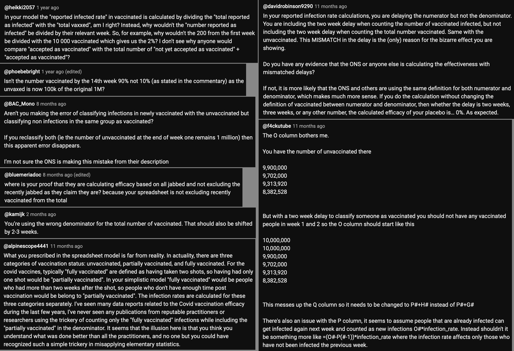
In the old Substack post where Fenton and Neil described their simulation procedure in more detail, even people in their comment section were able to tell that it was BS, so I wonder if that's why they didn't include a proper description of their simulation procedure in their new preprint.
In any case Neil and Fenton knew that their method of doing the simulations was controversial, so they could've mentioned in their preprint that there would also be an alternative way to perform the simulations where the 1-to-3-week delay is also applied to the denominator, and that they were not sure which method was used in the real studies they listed in their paper.
The final version of the ONS dataset for mortality by vaccination status was published in August 2023, and it included data up to May 2023. The reason why June and July were excluded was probably because they were still missing too many deaths because of a registration delay. In May it looked like the trend was that the unvaccinated ASMR was soon about to cross below the ever vaccinated ASMR: [https://twitter.com/mothrfunkr/status/1774625071140893040]
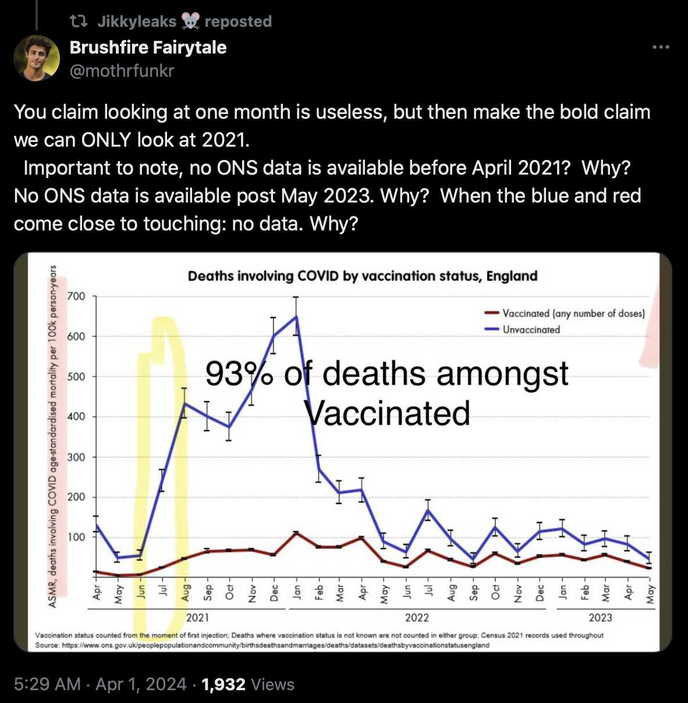
However I think it's because young people are more likely to be unvaccinated than older people, and younger people have a longer registration delay than older people, so during the last months with data available, there's a larger percentage of deaths missing in younger people which introduces a bias in favor of unvaccinated people.
In the July 2022 version, the last month of data included was May 2022, when unvaccinated people had only about 6% higher ASMR than vaccinated people, and it looked like the trend was that unvaccinated ASMR was soon about to cross below the vaccinated ASMR. But in the next release after more missing deaths were added, unvaccinated people now had about 22% higher ASMR than vaccinated people:
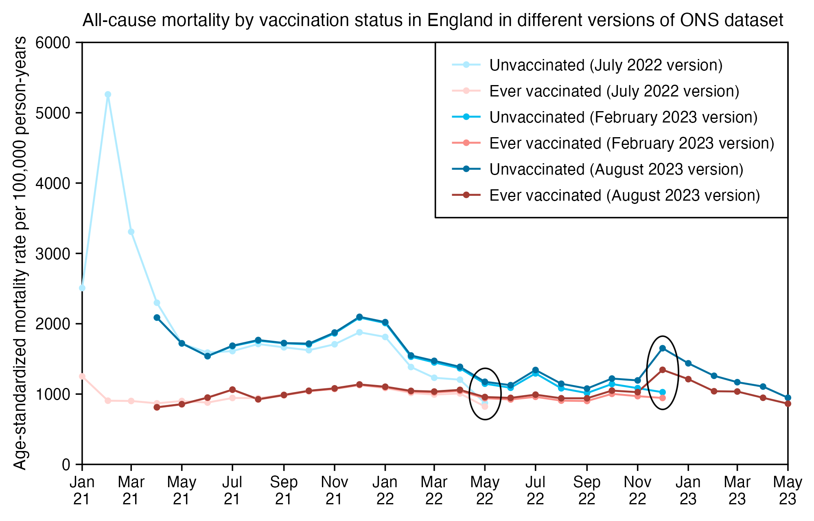
In the year 2021 in an ONS dataset titled "Impact of registration delays on mortality statistics", the proportion of deaths which had a registration delay of 3 months or longer was about 12% in ages 45-64 but only about 2% in ages 85 and over: [https://www.ons.gov.uk/peoplepopulationandcommunity/birthsdeathsandmarriages/deaths/articles/impactofregistrationdelaysonmortalitystatisticsinenglandandwales/2021]
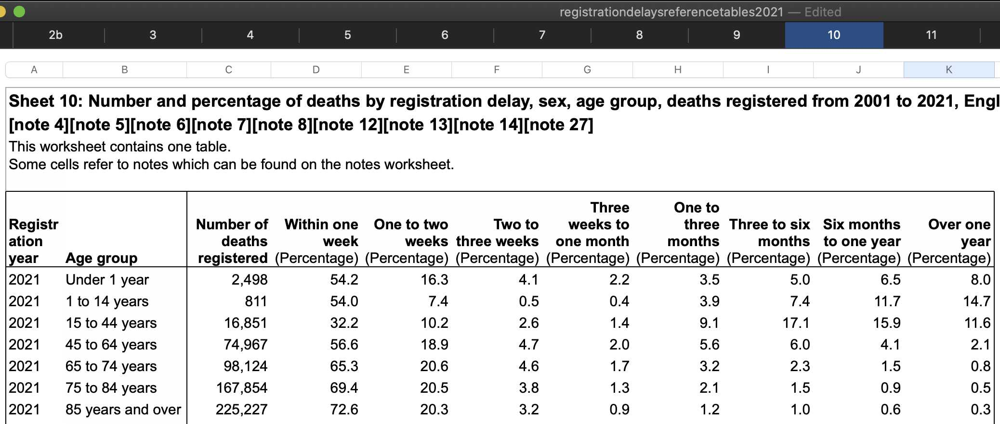
The same Twitter user also wrote: "Based on my calculations, approx 80% of UK population received at least 1 Covid injection yet accounted for 98% of the deaths in May of 23 before ONS stopped recording and sharing that damning data." [https://twitter.com/mothrfunkr/status/1774601668270940390] However in the ONS dataset in May 2023, the percentage of unvaccinated people was about 2% in ages 70+, and ages 70+ accounted for about 82% of all deaths:
> t=read.csv("http://sars2.net/f/ons-table-2-2023-august.csv",na="<3")
> t=subset(t,cause=="All causes"&year==2023&month=="May")
> m=tapply(t$pop,list(t$age,t$status!="Unvaccinated"),sum)
> round(m[,1]/rowSums(m)*100,1) # unvaccinated percentage
18-39 40-49 50-59 60-69 70-79 80-89 90+
18.2 10.9 6.4 4.2 2.5 2.2 2.4
> tap=tapply(t$dead,t$age,sum,na.rm=T)
> tap # total deaths
18-39 40-49 50-59 60-69 70-79 80-89 90+
260 483 1652 3822 8499 12509 7898
> sum(tail(tap,3))/sum(tap)*100 # percentage of deaths in ages 70+ out of all deaths
[1] 82.29935
In February 2024 the UK ONS announced that they had changed the methodology they used to calculate excess mortality. [https://www.ons.gov.uk/peoplepopulationandcommunity/healthandsocialcare/causesofdeath/articles/estimatingexcessdeathsintheukmethodologychanges/february2024]
Previously they used a simple 5-year average where the year 2020 was excluded but the years 2021-2023 were not, so for example the baseline for the year 2023 was based on the years 2017-2019 and 2021-2022. However now they simply excluded a hardcoded set of months when COVID was listed as the underlying cause of death for at least 15% of all deaths, which were April and May 2020 and November 2020 to February 2021 (or weeks 14-22 of 2020 and week 45 of 2020 to week 8 of 2021 for weekly data).
A lot of people were saying that the new method inflated excess deaths because 2020 and later years were included in the fitting period of the baseline, but people didn't realize that the old method also included the years 2021-2023. The old 5-year average underestimated excess deaths because UK has an increasing trend in deaths because of the aging population, but the old method overestimated excess deaths relative to the prepandemic trend because 2021-2023 were included in the baseline fitting period. So the old method was inaccurate in two ways, which ended up partially canceling each other out starting from the year 2022 when 2021 started to be included in the baseline fitting period.
Clare Craig wrote: [https://www.hartgroup.org/too-many-deaths-are-to-be-expected/]
Figure 1: ONS expected deaths estimates showing smooth predictions of old methodology (black dotted line) compared to jumping estimates using modelling methodology (red line) and actual deaths (grey bars). Note y axis starts at 500,000The consequence of the crazy estimate their new model spits out is that a total of 110,000 more deaths were "expected" from 2016-2019 compared to their old model. It also means that 2019 went from having an excess of 3k deaths to a deficit of 36k. If 36,000 people who were "expected" to die in 2019 did not have their deaths registered, then surely that paints the excess in registrations in 2020 in a different light.
However UK has an increasing trend in deaths per year because of the aging population, so in the years 2012 to 2019, the number of deaths was always above the average of the past five years. But a linear trend of the past five years was a better approximation of actual deaths, because the 5-year average was lagging 3 years behind the trend:
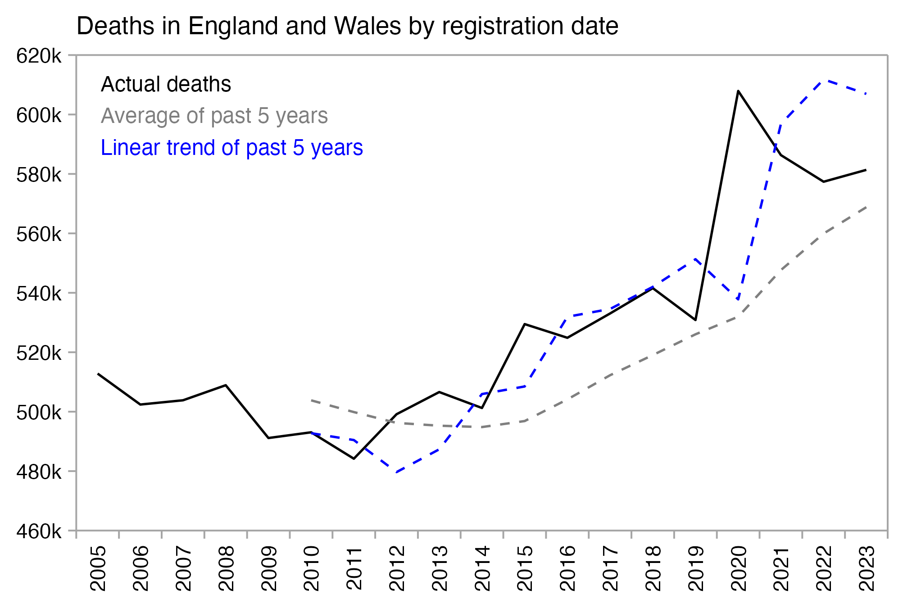
The ONS article about the new baseline methodology was accompanied by a spreadsheet which shows monthly and weekly deaths in the years 2005 to 2023 by age, region, and sex. In the code below I calculated the yearly sum of deaths in England and Wales based on Table 2 of the spreadsheet. When I used the average of the five previous years as the baseline for each year, there was a total of 68,840 excess deaths in 2016 to 2019. But when I used a linear trend of the five previous years as the baseline for each year, there's a total of -29,476 excess deaths in 2016 to 2019 instead. So difference is about 100,000 deaths, which is similar to the difference between the new and old ONS method that was mentioned by Craig:
download.file("https://www.ons.gov.uk/file?uri=/peoplepopulationandcommunity/healthandsocialcare/causesofdeath/datasets/estimatingexcessdeathsintheukmethodologychanges/current/dataset20240220.xlsx","dataset20240220.xlsx")
t=as.data.frame(readxl::read_excel("dataset20240220.xlsx",skip=4,sheet=5))
t=t[t$Geography=="England and Wales, including non-residents",]
d=aggregate(list(dead=t$Death),list(year=t$Year),sum)
# # same as above
# d=data.frame(year=2005:2023)
# d$dead=c(512817,502405,503838,508906,491140,493062,484178,499145,506608,501243,529472,524866,533047,541568,530841,607922,586334,577377,581368)
d$linear=c(rep(NA,5),sapply(2010:2023,\(i)predict(lm(dead~year,d[d$year%in%(i-1:5),]),list(year=i))))
d$average=c(rep(NA,5),sapply(2010:2023,\(i)mean(d$dead[d$year%in%(i-1:5)])))
d$excess_linear=d$dead-d$linear
d$excess_average=d$dead-d$average
print.data.frame(round(na.omit(d)),row.names=F)
# year dead linear average excess_linear excess_average
# 2010 493062 492765 503821 297 -10759
# 2011 484178 490455 499870 -6277 -15692
# 2012 499145 479676 496225 19469 2920
# 2013 506608 487341 495286 19267 11322
# 2014 501243 505932 494827 -4689 6416
# 2015 529472 508485 496847 20987 32625
# 2016 524866 531935 504129 -7069 20737
# 2017 533047 534559 512267 -1512 20780
# 2018 541568 541998 519047 -430 22521
# 2019 530841 551307 526039 -20466 4802
# 2020 607922 537791 531959 70131 75963
# 2021 586334 596821 547649 -10487 38685
# 2022 577377 611821 559942 -34444 17435
# 2023 581368 606942 568808 -25574 12560
round(colSums(d[d$year%in%2016:2019,-1]))
# dead linear_trend average excess_linear excess_average
# 2130322 2159798 2061482 -29476 68840
Craig also pointed out that the new ONS method produced a similar expected number of deaths for 2020, 2021, and 2022: [https://twitter.com/ClareCraigPath/status/1778336819270074865]
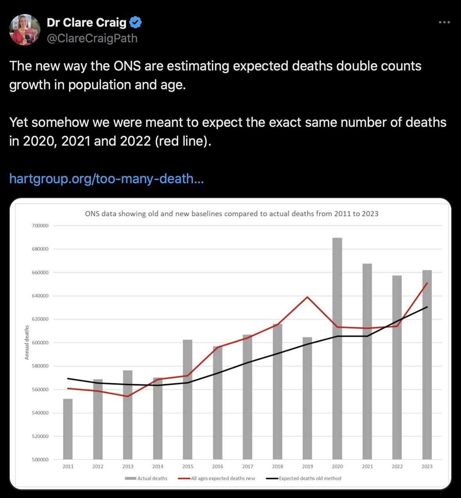
The new method uses a 5-year trend calculated with a quasi-Poisson regression. There was a big drop in the baseline between 2019 and 2020, because the baseline for the year 2020 was based on the years 2015-2019, and there was a low number of deaths in 2019 and a high number of deaths in 2015, so the slope of the trend was too low. The slope of a 2015-2019 linear trend is also too flat relative to the actual long-term trend. OWID also uses a 2015-2019 linear trend for all countries, so it overestimates excess deaths in countries that had a low number of deaths in 2019, like UK and Sweden.
In the plot below, I think my green baseline is more accurate than the new method used by the ONS. I first calculated a linear trend in crude mortality rate within each 5-year age group in 2010-2019. Then I multiplied the projected trend by the population size of the age group to get the expected number of deaths for the age group, and I added together the expected number of deaths for all age groups to get the total expected deaths for a year. I used a fairly long fitting period for the baseline, so anomalous years like 2019 have less impact on my baseline than in the new ONS method. But compared to my green baseline, the new ONS baseline actually seems far too low in the years 2021 and 2022:
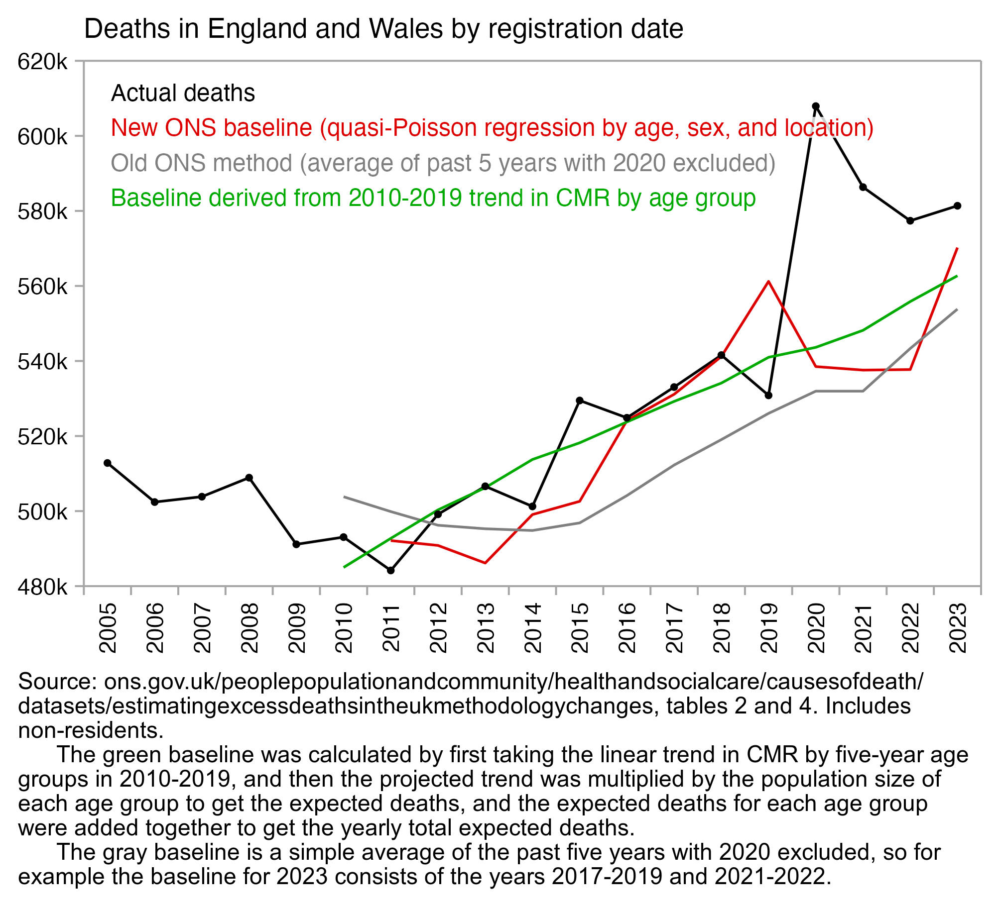
People were speculating that ONS adopted the new method of calculating the baseline in order to diminish the number of excess deaths caused by the vaccines. But my plot above shows that the new ONS baseline is likely far too low in the years 2021 and 2022, which would mean that it actually exaggerates excess deaths during the years when the most vaccines were given.
Here's R code for generating the plot above:
library(readxl);library(data.table);library(ggplot2)
download.file("https://www.ons.gov.uk/file?uri=/peoplepopulationandcommunity/healthandsocialcare/causesofdeath/datasets/estimatingexcessdeathsintheukmethodologychanges/current/dataset20240220.xlsx","dataset20240220.xlsx")
t=data.table(read_excel("dataset20240220.xlsx",skip=4,sheet=6))
t=t[Geography=="England and Wales, including non-residents"]
t[,pop:=`Population estimate`*lubridate::days_in_month(paste0(Year,"-",match(Month,month.name),"-1"))]
t[,age:=as.numeric(sub(" .*","",sub("Less.*",0,`Age group`)))]
a=t[,.(dead=sum(`Death registrations`),pop=sum(pop)),.(age,year=Year)]
years=unique(a$year)
a=merge(a,a[year%in%2010:2019,.(year=years,base=predict(lm(dead/pop~year),.(year=years))),age])[,base:=base*pop]
p=a[,.(dead=sum(dead),base=sum(base)),year]
t2=data.table(read_excel("dataset20240220.xlsx",skip=4,sheet=8))
t2=t2[Country=="England and Wales, including non-residents"&Sex=="Both sexes"&`Age group`=="All ages"]
p=merge(t2[,.(newons=sum(`Expected deaths`)),.(year=Year)],p,all=T)
p$oldons=c(rep(NA,5),sapply(2010:2023,\(i)mean(tail(p$dead[p$year<i&p$year!=2020],5))))
p$base[p$year<2010]=NA
p=p[,.(x=year,y=unlist(p[,-1]),z=rep(names(p)[-1],each=.N))]
p[,z:=factor(z,c("dead","newons","oldons","base"))]
color=c("black","#dd0000","gray50","#00aa00")
lab=c("Actual deaths","New ONS baseline (quasi-Poisson regression by age, sex, and location)","Old ONS baseline (average of past 5 years with 2020 excluded)","My baseline (derived from 2010-2019 trend in CMR by age group)")
xstart=2005;xend=2023;xbreak=xstart:xend
xlab=c(rbind("",xstart:xend),"")
ymin=min(p$y,na.rm=T);ymax=max(p$y,na.rm=T)
cand=c(sapply(c(1,2,5),\(year)year*10^c(-10:10)))
ystep=cand[which.min(abs(cand-(ymax-ymin)/5))]
ystart=ystep*floor(ymin/ystep)
yend=ystep*ceiling(ymax/ystep)
ybreak=seq(ystart,yend,ystep)
leg=data.frame(x=xstart+(xend-xstart)*.027-.5,y=ystart+(yend-ystart)*seq(.94,0,-1/15)[1:nlevels(p$z)],label=lab)
ggplot(p,aes(x=x,y=y))+
geom_hline(yintercept=c(ystart,yend),color="gray65",linewidth=.3)+
geom_vline(xintercept=c(xstart-.5,xend+.5),color="gray65",linewidth=.3)+
geom_line(aes(color=z),linewidth=.4)+
geom_point(data=subset(p,z=="dead"),aes(color=z),size=.5)+
geom_label(data=leg,aes(x=x,y=y,label=label),fill=alpha("white",.8),label.r=unit(0,"lines"),label.padding=unit(.04,"lines"),label.size=0,color=color,size=2.7,hjust=0)+
labs(title="Deaths in England and Wales by registration date",x=NULL,y=NULL)+
scale_x_continuous(limits=c(xstart-.5,xend+.5),breaks=seq(xstart-.5,xend+.5,.5),labels=xlab)+
scale_y_continuous(limits=c(ystart,yend),breaks=ybreak,labels=\(x)paste0(x/1e3,"k"))+
coord_cartesian(clip="off",expand=F)+
scale_color_manual(values=color)+
theme(axis.text=element_text(size=7.5,color="black"),
axis.text.x=element_text(angle=90,vjust=.5,hjust=1),
axis.ticks=element_line(linewidth=.3,color="gray65"),
axis.ticks.x=element_line(color=alpha("gray65",c(1,0))),
axis.ticks.length=unit(.2,"lines"),
axis.title=element_text(size=8),
legend.position="none",
panel.background=element_rect(fill="white"),
panel.grid=element_blank(),
plot.background=element_rect(fill="white"),
plot.margin=margin(.4,.6,.4,.4,"lines"),
plot.subtitle=element_text(size=7.2),
plot.title=element_text(size=8.8))
ggsave("0.png",width=4.5,height=3,dpi=400*4)
sub="\u00a0 Source: ons.gov.uk/peoplepopulationandcommunity/healthandsocialcare/causesofdeath/\ndatasets/estimatingexcessdeathsintheukmethodologychanges, tables 2 and 4. Includes non-residents.
The green baseline was calculated by first taking the linear trend in CMR by five-year age groups in 2010-2019, and then the projected trend was multiplied by the population size of each age group to get the expected deaths, and the expected deaths for each age group were added together to get the yearly total expected deaths.
The gray baseline is a simple average of the past five years with 2020 excluded, so for example the baseline for 2023 consists of the years 2017-2019 and 2021-2022."
system(paste0("magick 0.png -resize 25% -trim 1.png;magick 1.png \\( -size `identify -format %w 1.png`x -font Arial -interline-spacing -3 -pointsize 42 caption:'",sub,"' -splice x30 \\) -append -bordercolor white -border 36 1.png"))
Craig also wrote: "However, you can't hide the truth forever. All that is needed is the calculation of an age-standardised mortality rate. This is a way of mapping mortality from a real population to one that has a standard age structure so different regions can be fairly compared with each other and across time. Using that methodology it is impossible to hide the issue of excess mortality." In the code below I calculated ASMR for England and Wales using the spreadsheet that accompanied the methodology article by the ONS. I used the 2020 population as the standard population, and I used the 2005-2019 second-degree polynomial trend in ASMR as the baseline, which gave me only about 0.12% excess ASMR in the years 2016-2019 (so it's closer to the new ONS baseline than to the old ONS baseline):
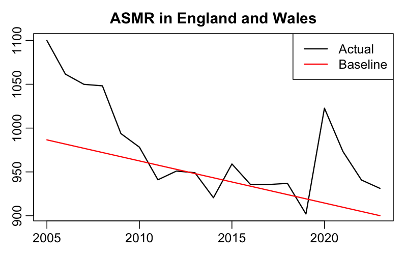
t=as.data.frame(readxl::read_excel("dataset20240220.xlsx",skip=4,sheet=5))
t=t[t$Geography=="England and Wales, including non-residents",]
dim=list(age=as.numeric(sub(" .*","",sub("Less.*",0,t$Age))),year=t$Year)
a=aggregate(list(dead=t$Death),dim,sum)
a$pop=c(tapply(t$Pop,dim,mean))*2
std=a$pop[a$year==2020]
d=aggregate(list(asmr=a$dead/a$pop*std[factor(a$age)]/sum(std)*1e5),a[,"year",drop=F],sum)
d$trend=predict(lm(asmr~year,subset(d,year%in%2010:2019)),d)
d$excesspct=(d$asmr/d$trend-1)*100
d$pop=tapply(a$pop,a$year,sum)
d$excessdead=(d$asmr-d$trend)/1e5*d$pop
print.data.frame(round(d),row.names=F)
# year asmr trend excesspct pop excessdead
# 2005 1100 987 11 53569582 60692
# 2006 1062 982 8 53958732 43042
# 2007 1050 977 7 54389720 39671
# 2008 1048 972 8 54834344 41695
# 2009 994 967 3 55243469 14567
# 2010 978 963 2 55695362 8736
# 2011 941 958 -2 56162059 -9383
# 2012 951 953 0 56578624 -1114
# 2013 949 948 0 56995298 550
# 2014 921 943 -2 57442224 -13077
# 2015 959 939 2 57887460 11881
# 2016 936 934 0 58347631 1158
# 2017 936 929 1 58697682 3941
# 2018 937 924 1 59008790 7575
# 2019 902 919 -2 59293219 -10239
# 2020 1023 915 12 59445253 64287
# 2021 973 910 7 59704283 37939
# 2022 941 905 4 60243501 21604
# 2023 931 900 3 60856738 18938
with(d[d$year%in%2016:2019,],sum(asmr)/sum(trend)-1)*100
# 0.115167 (total excess ASMR percentage in 2016-2019)
sum(d$excessdead[d$year%in%2016:2019])
# 2435.476 (total excess deaths in 2016-2019 derived from ASMR)
png("1.png",800,500,res=150)
par(mar=c(2.3,2.3,2.1,.8),mgp=c(0,.6,0))
tit="ASMR in England and Wales"
leg=c("Actual","Baseline")
col=c("black","red")
plot(d$year,d$asmr,type="l",col=col[1],main=tit,xlab=NA,ylab=NA,lwd=1.5)
lines(d$year,d$trend,type="l",col=col[2],lwd=1.5)
legend("topright",legend=leg,col=col,lty=1,lwd=1.5)
dev.off()
This plot also shows that regardless of whether I used a 2010-2019 linear trend or 2005-2019 polynomial trend to calculate excess ASMR, my total excess ASMR percentage in 2021-2023 was lower than the total excess mortality percent in 2021-2023 using the new ONS baseline:
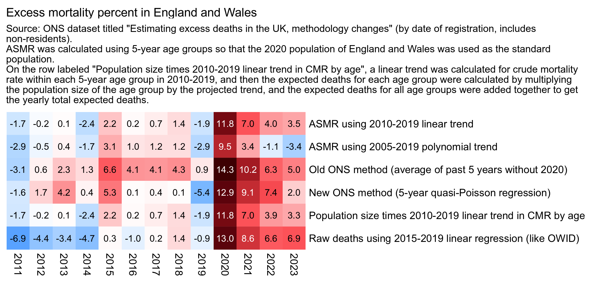
library(colorspace)
t=as.data.frame(readxl::read_excel("dataset20240220.xlsx",skip=4,sheet=5))
t=t[t$Geography=="England and Wales, including non-residents",]
dim=list(age=as.numeric(sub(" .*","",sub("Less.*",0,t$Age))),year=t$Year)
a=aggregate(list(dead=t$Death),dim,sum)
a$pop=c(tapply(t$Pop,dim,mean))*2
std=a$pop[a$year==2020]
asmr=tapply(a$dead/a$pop*std[factor(a$age)]/sum(std)*1e5,a$year,sum)
asmr=data.frame(year=unique(a$year),asmr)
trend=predict(lm(asmr~year,subset(asmr,year%in%2010:2019)),asmr)
trend2=predict(lm(asmr~poly(year,2),subset(asmr,year<2020)),asmr)
d=aggregate(a[,3:4],a[,2,drop=F],sum)
m=data.frame("ASMR using 2010-2019 linear trend"=(asmr$asmr/trend-1),check.names=F)
rownames(m)=2005:2023
m$"ASMR using 2005-2019 polynomial trend"=(asmr$asmr/trend2-1)
ave=c(rep(NA,5),sapply(2010:2023,\(i)mean(tail(d$dead[d$year<i&d$year!=2020],5))))
m$"Old ONS method (average of past 5 years without 2020)"=d$dead/ave-1
t4=as.data.frame(readxl::read_excel("dataset20240220.xlsx",skip=4,sheet=7))
t4=t4[t4$Country=="England and Wales, including non-residents"&t4$Sex=="Both sexes"&t4$Age=="All ages",]
new=tapply(t4$"Expected deaths",factor(t4$Year,2005:2023),sum)
m$"New ONS method (5-year quasi-Poisson regression)"=d$dead/new-1
ag=aggregate(list(dead=t$Death,pop=t$Pop),list(age=as.numeric(sub(" .*","",sub("Less.*",0,t$Age))),year=t$Year),sum)
ag$trend=c(t(sapply(split(ag,ag$age),\(x)lm(dead/pop~year,x[x$year%in%2010:2019,])|>predict(list(year=unique(ag$year))))))
cmrbased=tapply(ag$trend*ag$pop,ag$year,sum)
m$"Population size times 2010-2019 linear trend in CMR by age"=d$dead/cmrbased-1
owid=predict(lm(dead~year,subset(d,year%in%2015:2019)),d)
m$"Raw deaths using 2015-2019 linear regression (like OWID)"=d$dead/owid-1
m=t(m*100)[,-(1:5)]
maxcolor=max(abs(m),na.rm=T)
pal=hex(HSV(c(210,210,210,210,0,0,0,0,0),c(1,.8,.6,.3,0,.3,.6,.8,1),c(.3,.65,1,1,1,1,1,.65,.3)))
pheatmap::pheatmap(m,filename="0.png",display_numbers=T,number_format="%.1f",
cluster_rows=F,cluster_cols=F,legend=F,cellwidth=20,cellheight=20,fontsize=9,fontsize_number=8,
border_color=NA,na_col="gray90",
number_color=ifelse(abs(m)>maxcolor*.6,"white","black"),
breaks=seq(-maxcolor,maxcolor,,256),
colorRampPalette(pal)(256))
system("f=0.png;w=`identify -format %w $f`;convert $f -gravity northwest \\( -splice x16 -size $[w-44]x -pointsize 38 caption:'Excess mortality percent in England and Wales (by date of registration, includes non-residents). Source: ONS dataset titled \"Estimating excess deaths in the UK, methodology changes\".
ASMR was calculated using 5-year age groups so that the 2020 population of England and Wales was used as the standard population.
On the row labeled \"Population size times 2010-2019 linear trend in CMR by age\", a linear trend was calculated for crude mortality rate within each 5-year age group in 2010-2019, and then the projected trend was multiplied by the yearly population sizes of each age group, and the expected deaths for all age groups were added together to get the yearly total expected deaths.' -extent $[w-44]x -gravity center \\) +swap -append -bordercolor white -border 6 +repage 1.png")
Craig wrote: "The ONS methodology is complex and opaque - for example, they have failed to publish any of the weightings they have used in their formula." [https://www.hartgroup.org/too-many-deaths-are-to-be-expected/] However the ONS published their R code at GitHub. [https://github.com/ONS-Health-modelling-hub/Excess_deaths/blob/main/ons_monthly_ed%2eR] Here's a simplified version of the code which just prints the expected number of deaths for England and Wales in December 2023:
month=202312
d=openxlsx::read.xlsx("dataset20240220.xlsx",sheet="Table_2",startRow=5)
colnames(d)=c("year","month","weekdays","age","agecoarse","sex","geography","deaths","population")
d=d[d$geography=="England and Wales, including non-residents",]
d$month=factor(d$month,month.name)
d$age=factor(d$age,unique(d$age))
d$agecoarse=factor(d$agecoarse,unique(d$agecoarse))
d$sex=factor(d$sex)
d$period=as.numeric(sprintf("%d%02d",d$year,match(d$month,month.name)))
d=d[order(d$age,d$sex,d$geography,d$period),]
d$trend=ave(d$period,d$age,d$sex,d$geography,FUN=seq_along)
fit=d[d$trend%in%(d$trend[d$period==month][1]-12:71),]
fit=subset(fit,!period%in%c(202004,202005,202011,202012,202101,202102))
reg=glm(deaths~age+sex+trend+month+weekdays+agecoarse:sex+agecoarse:trend+agecoarse:month+offset(log(population)),quasipoisson,fit)
out=d[d$period==month,]
out$expected=predict(reg,out,type="response")
sum(out$expected)
# 49728.14 (same as cell H7649 of table 4 in the spreadsheet)
At first I thought that the regression above was based on raw number of deaths and not mortality rates, but the methodology article says that when the population size is included as an offset variable, it's analogous to doing the regression on mortality rates: "When using a quasi-Poisson regression model, modelling the number of deaths as the dependent variable, and including the natural logarithm of population size as an offset term is analogous to modelling the mortality rate in each age-sex-geography stratum." [https://www.ons.gov.uk/peoplepopulationandcommunity/healthandsocialcare/causesofdeath/articles/estimatingexcessdeathsintheukmethodologychanges/february2024]
ONS is not the only organization which has switched away from using a simple average baseline. OWID previously also used a 2015-2019 average to calculate excess deaths, but they later switched to a 2015-2019 linear trend which is usually more accurate. OWID's website says: "Previously we used a different expected deaths baseline: the average number of deaths over the years 2015–2019. We made this change because using the five-year average has an important limitation - it does not account for year-to-year trends in mortality and thus can misestimate excess mortality. The WMD projection, on the other hand, does not suffer from this limitation because it accounts for these year-to-year trends." [https://ourworldindata.org/excess-mortality-covid]
The Australian Bureau of Statistics previously used a 2015-2019 average to calculate excess deaths during COVID, but in 2023 they switched to a more sophisticated cyclical linear regression method which reduced the excess deaths during COVID, because Australia has an increasing trend in deaths per year similar to most OECD countries. [https://www.abs.gov.au/articles/measuring-australias-excess-mortality-during-covid-19-pandemic-until-august-2023]
TheRustler83 has been tweeting about how the ONS adopted the new method to calculate the baseline because they were trying to hide excess deaths caused by vaccines. I posted the plot for ASMR in England and Wales below to to demonstrate to him that when I used a 2015-2019 average baseline, I got negative total excess ASMR in 2024, and I got much lower excess mortality in the post-vaccination era compared to a 2015-2019 linear trend. But I guess in the case of ASMR he would not be in favor of using an average baseline instead of a linear trend, because there was a decreasing trend in ASMR before COVID so the average baseline would reduce the number of excess deaths in the post-vaccine era:
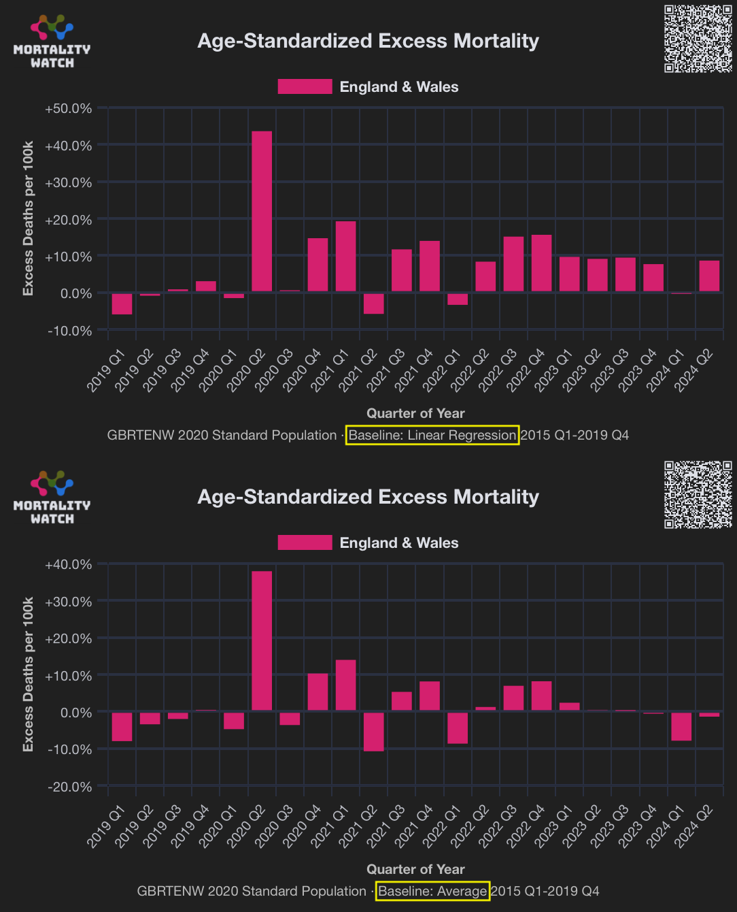
canceledmouse posted this plot of neonatal deaths in Scotland, and he suggested that the spikes in deaths in September 2021 and March 2022 might have been caused by the vaccines: [https://twitter.com/canceledmouse/status/1782970982367371664, https://scotland.shinyapps.io/phs-covid-wider-impact/]
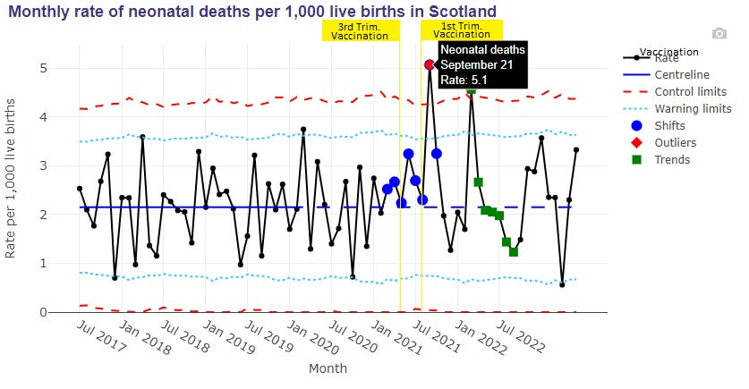
However the data has so much noise that I don't know if the spikes in deaths can be blamed on the vaccines. His plot only showed data up to June 2023, so you weren't able to see that there was a third spike in neonatal deaths in July 2023. And also stillbirths and postneonatal deaths peaked during completely different months than neonatal deaths. Stillbirths peaked in July 2020 and April 2023 which is difficult to blame on the vaccines, and postneonatal deaths peaked in September 2020 and April 2023:
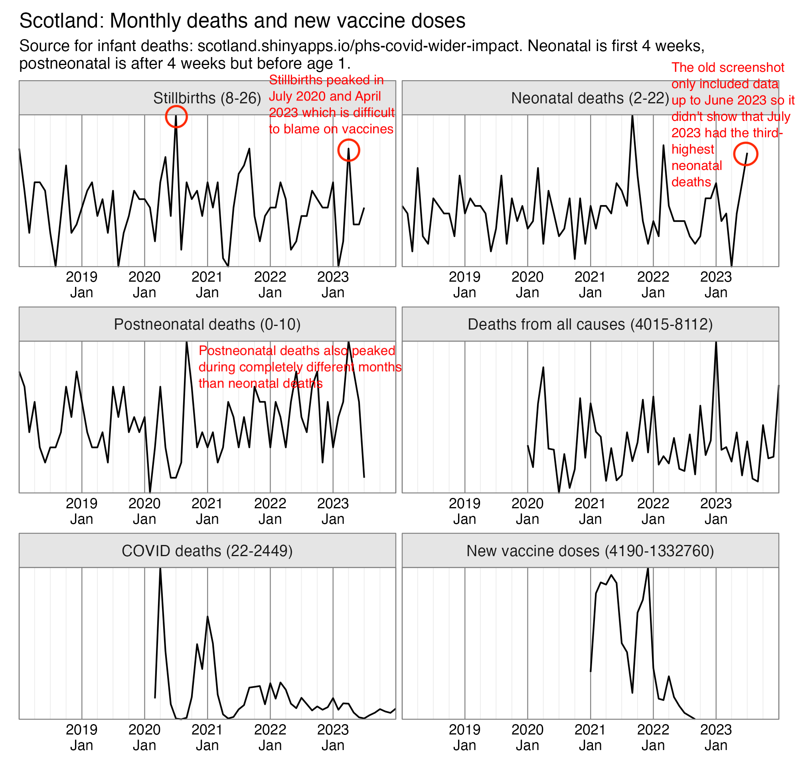
Eurostat only had yearly data for infant mortality, but when I selected countries that had a neonatal mortality rate available for each year out of 2010-2022, the average mortality rate actually decreased from about 24 deaths per 10,000 live births in 2020 to about 22 in 2021 (even though it would probably be better to calculate total neonatal deaths across all countries divided by total live births across all countries, so then small countries like Luxembourg with a lot of noise wouldn't be given that much weight, or I could've used a weighted average by population size instead of a regular average): [https://ec.europa.eu/eurostat/web/population-demography/demography-population-stock-balance/database]
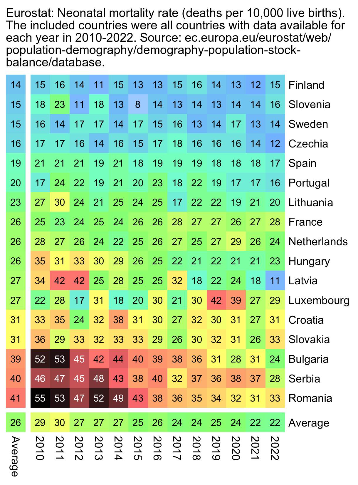
Clare Craig posted this tweet: [https://x.com/ClareCraigPath/status/1796064400060625118]
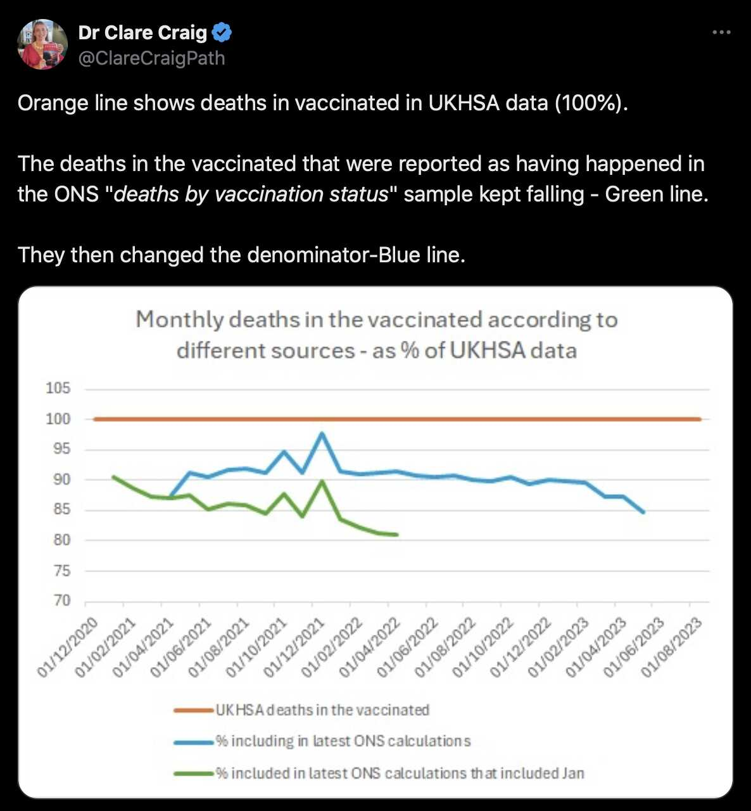
Her blue line shows the 9th August 2023 edition of the ONS data and the green line shows the 7th July 2022 edition, so there's a gap of over a year between the editions. So therefore a lot of deaths that were missing because of a registration delay in the 7th edition have been added to the 9th edition:
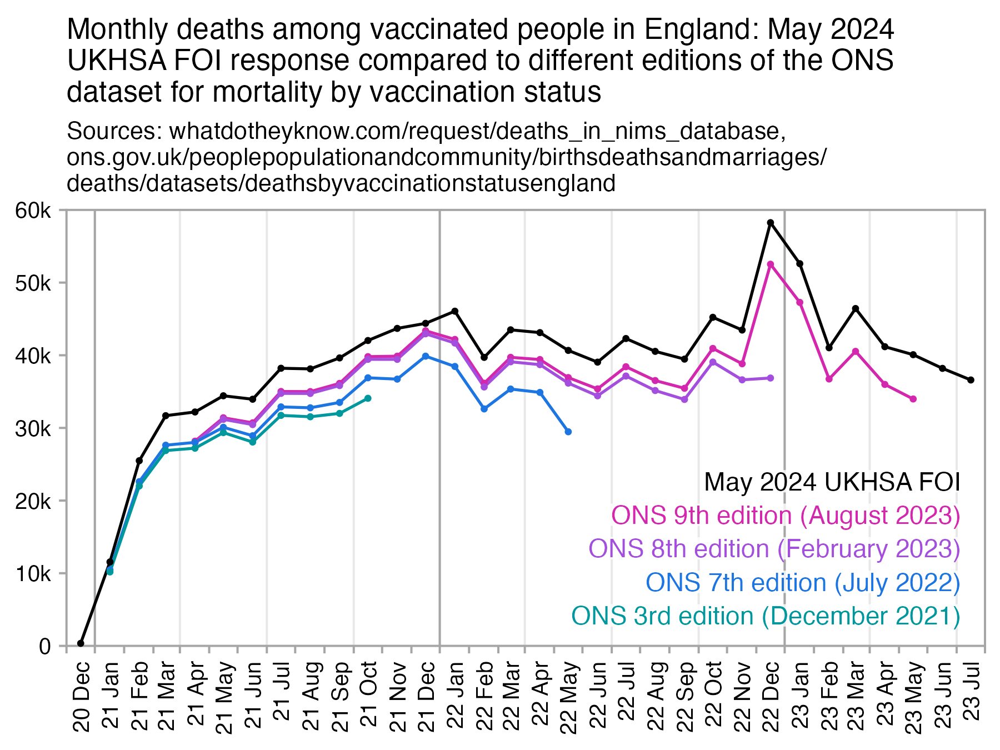
The 3rd edition was similarly missing a lot of deaths that had been added by the 7th edition even though there was a shorter time gap between the editions. (I didn't include the first two editions in the plot above, because they showed weekly instead of monthly data.)
For some reason the new FOI response has a higher number of deaths in January 2022 than December 2021, even though in the ONS dataset it's the reverse. I thought it might be if the FOI response was by registration date, but that doesn't seem to be the case:
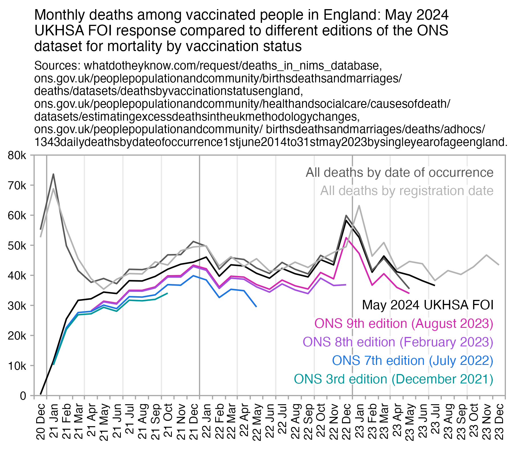
library(ggplot2)
# download.file("https://www.ons.gov.uk/file?uri=/peoplepopulationandcommunity/birthsdeathsandmarriages/deaths/adhocs/1343dailydeathsbydateofoccurrence1stjune2014to31stmay2023bysingleyearofageengland/dailydeaths2014to2023england.xlsx","dailydeaths2014to2023england.xlsx")
# download.file("https://www.whatdotheyknow.com/request/deaths_in_nims_database/response/2653782/attach/4/Covid19VAccineDataForThoseWithADeathRecordv5.csv","Covid19VAccineDataForThoseWithADeathRecordv5.csv")
# download.file("https://www.ons.gov.uk/file?uri=/peoplepopulationandcommunity/healthandsocialcare/causesofdeath/datasets/estimatingexcessdeathsintheukmethodologychanges/current/dataset20240220.xlsx","dataset20240220.xlsx")
t=read.csv("Covid19VAccineDataForThoseWithADeathRecordv5.csv")
t=t[t$Dose.Number==1,]
a=aggregate(list(y=t$Record.Count),list(x=sub("../(..)/(....)","\\2-\\1",t$Date)),sum)
a=a[a$x!="2023-08",]
a$z="May 2024 UKHSA FOI"
t0=read.csv("http://sars2.net/f/ons-table-1-2021-december.csv")|>subset(cause=="All causes"&status!="Unvaccinated")
t1=read.csv("http://sars2.net/f/ons-table-1-2022-july.csv")|>subset(cause=="All causes"&status=="Ever vaccinated")
t2=read.csv("http://sars2.net/f/ons-table-1-2023-august.csv")|>subset(cause=="All causes"&status=="Ever vaccinated")
t3=read.csv("http://sars2.net/f/ons-table-1-2023-february.csv")|>subset(cause=="All causes"&status=="Ever vaccinated")
d0=aggregate(list(y=t0$dead),list(x=sprintf("%d-%02d",t0$year,match(t0$month,month.name))),sum)|>cbind(z="ONS 3rd edition (December 2021)")
d1=data.frame(x=sprintf("%d-%02d",t1$year,match(t1$month,month.name)),y=t1$dead,z="ONS 7th edition (July 2022)")
d2=data.frame(x=sprintf("%d-%02d",t3$year,match(t3$month,month.name)),y=t3$dead,z="ONS 8th edition (February 2023)")
d3=data.frame(x=sprintf("%d-%02d",t2$year,match(t2$month,month.name)),y=t2$dead,z="ONS 9th edition (August 2023)")
reg=as.data.frame(readxl::read_excel("dataset20240220.xlsx",sheet=5,skip=4))
reg=reg[!grepl("Wales|Ireland|Scotland",reg$Geography),]
d4=aggregate(list(y=reg$Death),list(x=sprintf("%d-%02d",reg$Year,match(reg$Month,month.name))),sum)
d4=d4[d4$x>="2020-12",]
d4$z="All deaths by registration date"
occ=as.data.frame(readxl::read_excel("dailydeaths2014to2023england.xlsx",sheet=4,range="A6:CP3293"))
occ=aggregate(list(y=rowSums(occ[,-(1:3)])),list(x=sprintf("%s-%02d",occ$Year,occ$Month)),sum)
occ$z="All deaths by date of occurrence"
occ=occ[occ$x>="2020-12",]
xy=rbind(a,d3,d2,d1,d0,occ,d4)
xy$z=factor(xy$z,unique(xy$z))
xy$x=as.Date(paste0(xy$x,"-1"))
xstart=min(xy$x);xend=max(xy$x)
xbreak=sort(c(seq(xstart-15,xend+15,"month"),seq(xstart,xend,"month")))
xlab=c(rbind("",format(seq(xstart,xend,"month"),"%y %b")),"")
cand=c(sapply(c(1,2,5),\(year)year*10^c(-10:10)))
ymin=min(xy$y);ymax=max(xy$y)
ystep=cand[which.min(abs(cand-(ymax-ymin)/6))]
yend=ystep*ceiling(ymax/ystep)
ystart=0
ybreak=seq(ystart,yend,ystep)
color=c("black",hcl(c(310,270,240,180)+15,100,50),"gray35","gray70")
lab1=data.frame(x=xstart+.99*(xend-xstart),y=rev(seq(yend*.07,,yend/13,5)),label=levels(xy$z)[1:5])
lab2=data.frame(x=xstart+.99*(xend-xstart),y=seq(yend*.93,,-yend/13,2),label=levels(xy$z)[6:7])
kim=\(x)ifelse(x>=1e3,ifelse(x>=1e6,paste0(x/1e6,"M"),paste0(x/1e3,"k")),x)
ggplot(xy,aes(x=x,y=y))+
geom_vline(xintercept=seq(as.Date("2021-1-1")-16,xend,"3 month"),color="gray91",linewidth=.3)+
geom_vline(xintercept=seq(as.Date("2021-1-1")-16,xend,"year"),color="gray65",linewidth=.3)+
geom_hline(yintercept=c(ystart,yend),color="gray65",linewidth=.3,lineend="square")+
geom_vline(xintercept=c(xstart-15,xend+15),color="gray65",linewidth=.3,lineend="square")+
geom_line(aes(color=z),linewidth=.4)+
geom_label(data=lab1,aes(x=x,y=y,label=label),fill=alpha("white",.8),label.r=unit(0,"lines"),label.padding=unit(.04,"lines"),label.size=0,color=color[1:5],size=2.6,hjust=1)+
geom_label(data=lab2,aes(x=x,y=y,label=label),fill=alpha("white",.8),label.r=unit(0,"lines"),label.padding=unit(.04,"lines"),label.size=0,color=color[6:7],size=2.6,hjust=1)+
labs(title="Monthly deaths among vaccinated people in England: May 2024 UKHSA FOI response compared to different editions of the ONS dataset for mortality by vaccination status"|>stringr::str_wrap(63),subtitle="Sources: whatdotheyknow.com/request/deaths_in_nims_database, ons.gov.uk/peoplepopulationandcommunity/birthsdeathsandmarriages/
deaths/datasets/deathsbyvaccinationstatusengland, ons.gov.uk/peoplepopulationandcommunity/healthandsocialcare/causesofdeath/
datasets/estimatingexcessdeathsintheukmethodologychanges, ons.gov.uk/peoplepopulationandcommunity/
birthsdeathsandmarriages/deaths/adhocs/
1343dailydeathsbydateofoccurrence1stjune2014to31stmay2023bysingleyearofageengland."|>stringr::str_wrap(90),x=NULL,y=NULL)+
coord_cartesian(clip="off",expand=F)+
scale_x_date(limits=c(xstart-15,xend+15),breaks=xbreak,labels=xlab)+
scale_y_continuous(limits=c(ystart,yend),breaks=ybreak,labels=kim)+
scale_color_manual(values=color)+
theme(axis.text=element_text(size=6.5,color="black"),
axis.text.x=element_text(angle=90,vjust=.5,hjust=1),
axis.ticks=element_line(linewidth=.3,color="gray65"),
axis.ticks.x=element_line(color=alpha("gray65",c(1,0))),
axis.ticks.length=unit(.15,"lines"),
axis.title=element_text(size=8),
legend.position="none",
panel.background=element_rect(fill="white"),
panel.grid=element_blank(),
plot.background=element_rect(fill="white"),
plot.margin=margin(.3,.3,.3,.3,"lines"),
plot.subtitle=element_text(size=6.6,margin=margin(0,0,.6,0,"lines")),
plot.title=element_text(size=8.2,margin=margin(.1,0,.5,0,"lines")))
ggsave("1.png",width=4,height=3.5,dpi=450)
For some reason in April 2021 the 9th edition has less deaths in ages 90+ than the 7th edition. So were some old people linked to the 2011 census but not the 2021 census? However the population size of ages 90+ is higher in the 9th edition than the 7th edition.
| Population size and deaths in April 2021 (9th August 2023 edition vs 7th July 2022 edition) | ||||||||
|---|---|---|---|---|---|---|---|---|
| age | 18-39 | 40-49 | 50-59 | 60-69 | 70-79 | 80-89 | 90+ | total |
| population in 7th edition | 920010 | 453934 | 527707 | 430934 | 351089 | 167693 | 36709 | 2888076 |
| population in 9th edition | 1131560 | 541233 | 594904 | 473849 | 382912 | 179226 | 37954 | 3341638 |
| absolute change | 211550 | 87299 | 67197 | 42915 | 31823 | 11533 | 1245 | 453562 |
| percentage change | 23.0 | 19.2 | 12.7 | 10.0 | 9.1 | 6.9 | 3.4 | 15.7 |
| deaths in 7th edition | 490 | 676 | 1772 | 3599 | 7524 | 10892 | 6880 | 31833 |
| deaths in 9th edition | 551 | 666 | 1825 | 3664 | 7528 | 10855 | 6631 | 31720 |
| absolute change | 61 | -10 | 53 | 65 | 4 | -37 | -249 | -113 |
| percentage change | 12.4 | -1.5 | 3.0 | 1.8 | 0.1 | -0.3 | -3.6 | -0.4 |
As an explanation why almost all deaths were in vaccinated people in late 2022, Craig suggested that dying people who were previously unvaccinated were vaccinated on their deathbed: [https://x.com/ClareCraigPath/status/1795770648721240528]
It has become almost impossible to die in this country without first being injected.
No longer is the priest by the bed side reading last rites, it's the vaccinator.
I will explain below.
The graph shows the percentage of adult deaths in England that were vaccinated https://whatdotheyknow.com/request/deaths_in_nims_database#incoming-2653782
out of total deaths in England. https://ons.gov.uk/peoplepopulationandcommunity/birthsdeathsandmarriages/deaths/adhocs/1343dailydeathsbydateofoccurrence1stjune2014to31stmay2023bysingleyearofageengland
From 2022, there were more covid deaths in the vaccinated with omicron - but I don't think that is what accounts for this.
This is all cause deaths - which had settled into a predictable pattern in summer 2021.
Even if the vaccinated died more, the unvaccinated should still be dying!
How can there be half the deaths in the unvaccinated in July 2022 compared to July 2021?
By Autumn it was only a quarter.
In summer 2021 the unvaccinated seem to have been left alone.
But in 2022, as well as the vaccinated dying more, it looks like those susceptible to death had been injected before dying.
Same as first graph with zoomed in y-axis showing percentage of deaths in vaccinated.
Vaccinating the dying makes interpretation of any data on deaths almost impossible.
At first I thought that Craig's Twitter thread might have been tongue-in-cheek and she actually meant that there was some anomaly in the data she described and not that unvaccinated people who were soon about to die were actually being vaccinated. Someone else seems to have had the same impression, because they posted this reply to the thread: "Sorry, Clare, I find all that info very hard to take in, but are you saying that if you go to die in hospital, at any age, from any causes, they will vaccinate you? Or are you saying they are fiddling the figures?" However Craig indicated that she was being serious: "I think the former. Unless you die suddenly, I think there's huge pressure still to be injected." [https://x.com/ClareCraigPath/status/1795954376751632471]
However her theory doesn't hold water, because according to the new FOI response there were 269,247 people who died in the second half of 2022, but among them only 193 people had received the first vaccine dose on a week that started in the second half of 2022:
download.file("https://www.whatdotheyknow.com/request/deaths_in_nims_database/response/2653782/attach/4/Covid19VAccineDataForThoseWithADeathRecordv5.csv","Covid19VAccineDataForThoseWithADeathRecordv5.csv")
t=read.csv("Covid19VAccineDataForThoseWithADeathRecordv5.csv")
for(i in grep("Date",colnames(t)))t[,i]=as.Date(t[,i],"%d/%m/%Y")
d1=as.Date("2022-7-1");d2=as.Date("2022-12-31")
t=t[t$Dose.Number==1&t$Date.of.Death%in%d1:d2,]
sum(t$Record.Count) # 269247
sum(t$Record.Count[t$Dose.Date%in%d1:d2]) # 193
The reason why some of Craig's plots showed that nearly 100% of deaths were in vaccinated people in late 2022 was because she took the monthly number of deaths in vaccinated people from the new FOI response which was released in May 2024, but she took the number of deaths in the general population of England from an old ONS user request which was released in July 2023. The deaths in the ONS user request are by date of occurrence and not by registration date, so it has a fairly large number of deaths missing because of a registration delay, and the proportion of missing deaths is particularly high in late 2022 and in younger age groups. [https://www.whatdotheyknow.com/request/deaths_in_nims_database#incoming-2653782, https://www.ons.gov.uk/peoplepopulationandcommunity/birthsdeathsandmarriages/deaths/adhocs/1343dailydeathsbydateofoccurrence1stjune2014to31stmay2023bysingleyearofageengland] In the first plot below I took the number of deaths among the general English population from the same ONS user response that Craig used. But in the second plot I used a more recent dataset which was not missing as many deaths as the old ONS user reponse, so I got a much lower percentage of deaths in vaccinated people:

# download.file("https://www.ons.gov.uk/file?uri=/peoplepopulationandcommunity/birthsdeathsandmarriages/deaths/adhocs/1343dailydeathsbydateofoccurrence1stjune2014to31stmay2023bysingleyearofageengland/dailydeaths2014to2023england.xlsx","dailydeaths2014to2023england.xlsx")
# download.file("https://www.whatdotheyknow.com/request/deaths_in_nims_database/response/2653782/attach/4/Covid19VAccineDataForThoseWithADeathRecordv5.csv","Covid19VAccineDataForThoseWithADeathRecordv5.csv")
# download.file("https://www.ons.gov.uk/file?uri=/peoplepopulationandcommunity/healthandsocialcare/causesofdeath/datasets/estimatingexcessdeathsintheukmethodologychanges/current/dataset20240220.xlsx","dataset20240220.xlsx")
t=read.csv("Covid19VAccineDataForThoseWithADeathRecordv5.csv")
t=t[t$Dose.Number==1,]
m=xtabs(t$Record~t$Age+sub("../(..)/(....)","\\2-\\1",t$Date))
ages=sort(as.numeric(sub("[-+].*","",unique(t$Age))))
death=as.data.frame(readxl::read_excel("dailydeaths2014to2023england.xlsx",sheet=4,range="A6:CP3293"))
month=sprintf("%s-%02d",death$Year,death$Month)
death=death[,-c(1:23)]
death=t(rowsum(t(death),cut(as.numeric(colnames(death)),c(ages,Inf),,T,F)))
death=t(rowsum(death,month))
d=as.data.frame(readxl::read_excel("dataset20240220.xlsx",sheet=5,skip=4))
d=d[!grepl("Wales|Ireland|Scotland",d$Geography),]
death2=xtabs(d$Death~pmin(80,as.numeric(sub(" .*","",sub("Less",0,d$Age))))+sprintf("%s-%02d",d$Year,match(d$Month,month.name)))
death2=death2[-(1:5),]
pal=colorRampPalette(colorspace::hex(colorspace::HSV(c(210,210,210,210,0,0,0,0,0),c(1,.8,.6,.3,0,.3,.6,.8,1),c(.3,.65,1,1,1,1,1,.65,.3))))(256)
m1=m
pick=intersect(colnames(m1),colnames(death));m1=m1[,pick];death=death[,pick]
m1=rbind(m1,Total=colSums(m1));death=rbind(death,Total=colSums(death))
m1=m1/death*100
m2=m
pick=head(intersect(colnames(m2),colnames(death2)),-1);m2=m2[,pick];death2=death2[,pick]
m2=rbind(m2,Total=colSums(m2));death2=rbind(death2,Total=colSums(death2))
m2=m2/death2*100
pheatmap::pheatmap(m1,filename="i1.png",display_numbers=round(m1),
gaps_row=nrow(m1)-1,
cluster_rows=F,cluster_cols=F,legend=F,cellwidth=17,cellheight=17,fontsize=9,fontsize_number=8,
border_color=NA,na_col="gray90",number_color=ifelse(abs(m1-100)>50,"white","black"),
breaks=seq(0,200,,256),pal)
pheatmap::pheatmap(m2,filename="i2.png",display_numbers=round(m2),
gaps_row=nrow(m2)-1,
cluster_rows=F,cluster_cols=F,legend=F,cellwidth=17,cellheight=17,fontsize=9,fontsize_number=8,
border_color=NA,na_col="gray90",number_color=ifelse(abs(m2-100)>50,"white","black"),
breaks=seq(0,200,,256),pal)
cap=" Deaths among vaccinated people in May 2024 FOI response as percentage of deaths among the general population of England. Sources: whatdotheyknow.com/request/deaths_in_nims_database#incoming-2653782, ons.gov.uk/peoplepopulationandcommunity/birthsdeathsandmarriages/deaths/adhocs/1343dailydeathsbydateofoccurrence1stjune2014to31stmay2023bysingleyearofageengland (by date of occurrence), ons.gov.uk/peoplepopulationandcommunity/healthandsocialcare/causesofdeath/datasets/estimatingexcessdeathsintheukmethodologychanges (by registration date)."
cap=paste0(cap,"
The dataset for deaths by date of occurrence is missing many deaths in 2023 and 2022 because of a registration delay, and the proportion of missing deaths is particularly high in younger age groups in 2023. The dataset for deaths by registration date seems to be missing many deaths in December 2022, which might be if there was a delay registering deaths during the holidays.
In the FOI response the age of each person is the age at the date of first vaccination, which might explain why for example the 70-74 age group has over 100% deaths in 2023 and 2022, because by 2023 it includes people who were up to 77 years old when they died.")
system("f=i1.png;mar=44;w=`identify -format %w $f`;convert -gravity northwest \\( -size $[w-mar]x -font Arial-Bold -pointsize 41 caption:'Deaths in general population of England from July 2023 ONS user response ID 1343 (by date of occurrence)' -extent $[w-mar]x -gravity north \\) $f -append l1.png")
system("f=i2.png;mar=44;w=`identify -format %w $f`;convert -gravity northwest \\( -size $[w-mar]x -font Arial-Bold -pointsize 41 caption:'Deaths in general population of England from spreadsheet about new baseline methodology (by registration date)' -extent $[w-mar]x -gravity north \\) $f -append l2.png")
system("convert -gravity northwest \\( -splice x18 l1.png \\) l2.png -append 0.png")
system(paste0("f=0.png;mar=40;w=`identify -format %w $f`;convert -gravity northwest \\( -size $[w-mar]x -font Arial -interline-spacing -5 -pointsize 41 caption:'",gsub("'","'\\\\''",cap),"' -extent $[w-mar]x -gravity north -splice x20 \\) $f -append 1.png"))
Clare Craig posted plots which showed that people vaccinated during the rollout peak subsequently had a low mortality rate up to the end of 2021, but people vaccinated either before or after the rollout peak had a higher mortality rate:
The same pattern is seen in older age groups.
- Targeting of the dying in spring 2021, with a high proportion dead by the end of the year
- Rollout to the healthy with a low proportion who then die
- Targeting the dying again, perhaps pressuring those declined vaccinations if they then become ill or are admitted to hospital
[...]
Craig said that in during the third phase in the second half of 2021, "the dying" were targeted again because the mortality rate was higher than during the second phase. However I don't know if people who were soon about to die were even overrepresented among the people who were vaccinated in the third phase, because the plot below shows that the mortality rate of people vaccinated in the second half of 2021 is close to the baseline in most age groups (except it's below the baseline in youngest age groups and maybe a bit above it in the two oldest age groups, but on the other hand I didn't account for aging of people over time when I calculated the baseline, so the baseline is too low particularly in the two oldest age groups, because by the end of 2022 for example the age group 70-79 includes people who are up to 81 years old):
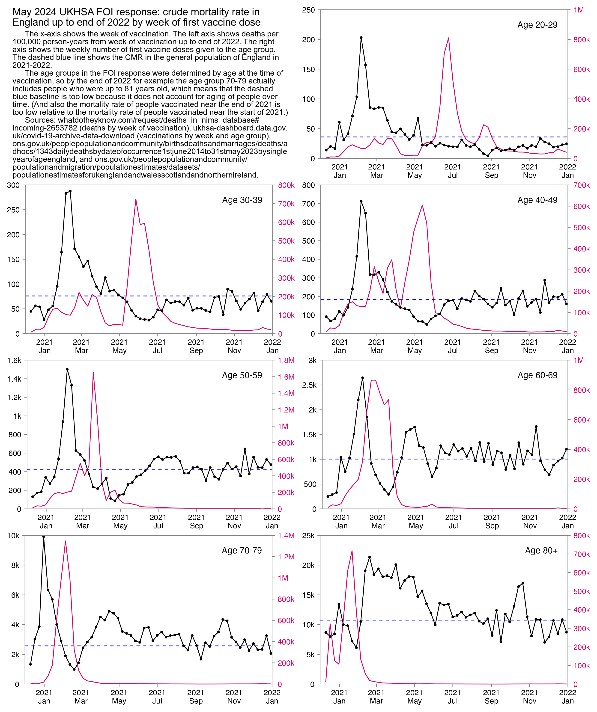
In the plot above ages 80+ are far above the baseline from February to April 2021, but it could be if people from the upper end of the age group were overrepresented among vaccinated people. One limitation of the FOI response is that it only has one broad age group for ages 80 and above.
Joel Smalley wrote the following about a plot I posted on Twitter:
Well, apart from the fact that the deaths are in the wrong place, preventing any meaningful analysis, the missing deaths (the ones that are actually meaningful because they were unusual enough to warrant extra attention of the coroner), actually make a difference!
Case in point, here, courtesy of henjin256, are the updates to the ONS bulletin on COVID vaccine mortality:
You see how many more deaths there really were in the vaccinated (black line resulting for Clare Craig's FOI request) compared to their original bulletin in Dec 2021 (green line) that was seized upon by the MSM to vilify all the dirty unvaccinated?
What a difference three years makes, eh? And we only know because of Clare's diligence. Left to their own devices, the ONS wouldn't have bothered with any further updates.
How much difference? Completely turns it on its head, that's what! You go from a spurious positive vaccine effectiveness to a negative one because, ultimately, there are thousands more deaths reported in the vaccinated (numerator) but the vaccinated population (denominator) hasn't changed [1].
[...]
1. In this case, the numerator is the proportion of deaths that are in the vaccinated and the denominator is the proportion of population that is vaccinated. Both numerator and denominator of deaths will increase as new mortality data is received but it is evidently disproportionately in the vaccinated. That alone is a story.
However the numerator in my plot was the absolute number of deaths in vaccinated people, and not the proportion of deaths. And the denominator did in fact change, because the black line includes deaths among the general resident population of England, but the colored lines which show data from the ONS dataset only include the subset of the English population that is linked in the ONS dataset.
The bulletin for the 9th release of the ONS dataset said: "The 2021 Census linked dataset is based on the population in Census 2021. This allows for analyses to be carried out that require a known living population with known characteristics. We linked deidentified Census 2021 records to NHS numbers using the personal demographics service to obtain NHS numbers for census identifiers. People with no NHS number or multiple entries are not included, and imputed individuals are not included. The individuals were then linked via NHS number to vaccination data from the National Immunisation Management Service (NIMS) and ONS death registrations. The population was restricted to people in England, alive on 1 April 2021 (51,786,812 people). This is 91.6% of the England population on Census Day 2021." [https://www.ons.gov.uk/peoplepopulationandcommunity/birthsdeathsandmarriages/deaths/bulletins/deathsinvolvingcovid19byvaccinationstatusengland/latest] And the bulletin for the 7th release of the ONS dataset said: "The PHDA is a linked dataset combining the 2011 Census, the General Practice Extraction Service (GPES) data for COVID-19 pandemic planning and research, and the Hospital Episode Statistics (HES). It combines demographic and socio-economic factors with pre-existing conditions based on clinical records. The PHDA covers England only and contains a subset of approximately 79% of the population of England aged 10 years." [https://www.ons.gov.uk/peoplepopulationandcommunity/birthsdeathsandmarriages/deaths/bulletins/deathsinvolvingcovid19byvaccinationstatusengland/deathsoccurringbetween1january2021and31may2022]
In the latest version of the ONS dataset for mortality by vaccination status, for example in May 2022 vaccinated people have 3,330,575 person-years, which corresponds to approximately 39,214,835 people (from 3330575/31*365). But in ZIP archive of data from the discontinued the UK Coronavirus Dashboard API, the average cumulative number of vaccinated people across all days of May 2022 is 44,876,003, which is about 14% higher than the number of vaccinated people in the ONS dataset: [https://ukhsa-dashboard.data.gov.uk/covid-19-archive-data-download]
$ wget https://archive.ukhsa-dashboard.data.gov.uk/coronavirus-dashboard/vaccinations.zip;unzip vaccinations.zip
$ grep England vaccinations/2022/cumPeopleVaccinatedFirstDoseByPublishDate_nation_2022.csv|grep 2022-05|awk -F, '/England/&&/2022-05/{a+=$NF}END{printf"%.0f\n",a/NR}'
44876003
Clare Craig posted this tweet: [https://x.com/ClareCraigPath/status/1796963951483277501]
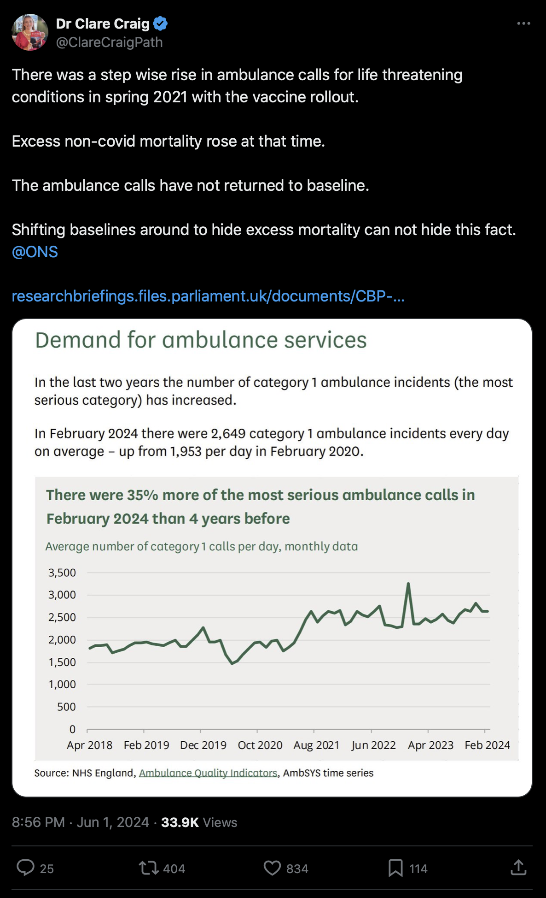
At first I thought that maybe there was some kind of a change to the definitions of the different categories around mid-2021, because the number of category 3 incidents went down around the same time when the number of category 1 incidents went up, but the total number of incidents remained roughly flat. So I thought that maybe there was some kind of a change in policy, so that for example a part of category 3 incidents were shifted to category 2 and a part of category 2 incidents were shifted to category 1: [https://www.england.nhs.uk/statistics/statistical-work-areas/ambulance-quality-indicators/]
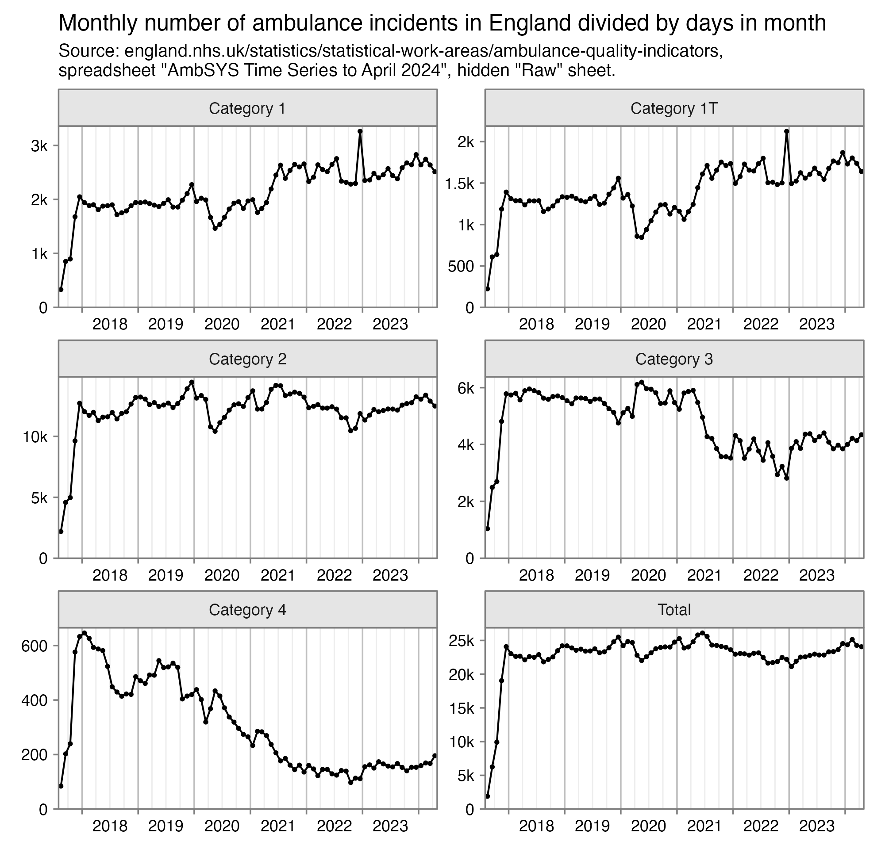
However I didn't find any source which would've mentioned that there was any change in policy around mid-2021. For example a report published in August 2021 said that there had been an increase in category 1 incidents, but it didn't mention that the increase would've been because of any kind of a policy change: "The latest month's activity figures continue to highlight the intense pressure the ambulance service is facing. In June 2021, ambulance category one incidents increased by 8.1% since the previous month to 73,505 (5,523 more incidents). In comparison to a year ago, category one incidents have increased significantly by 62% (28,144 more incidents than June 2020). Compared to two years ago, before the pandemic, this is an increase of 27.2% (15,714 more incidents than June 2019) and overall activity has increased by 11.3%." [https://nhsproviders.org/rapid-response/introduction]
As an alternative explanation for why C3 incidents went down around the same time when C1 incidents went up, an increase in C1 incidents might have meant that ambulance services no longer had enough resources to respond to all C3 incidents, so they may have needed to adapt a more agressive triage policy that reduced the number of C3 incidents they needed to respond to.
TheRustler83 posted this tweet: [https://x.com/TheRustler83/status/1799686665125929212]
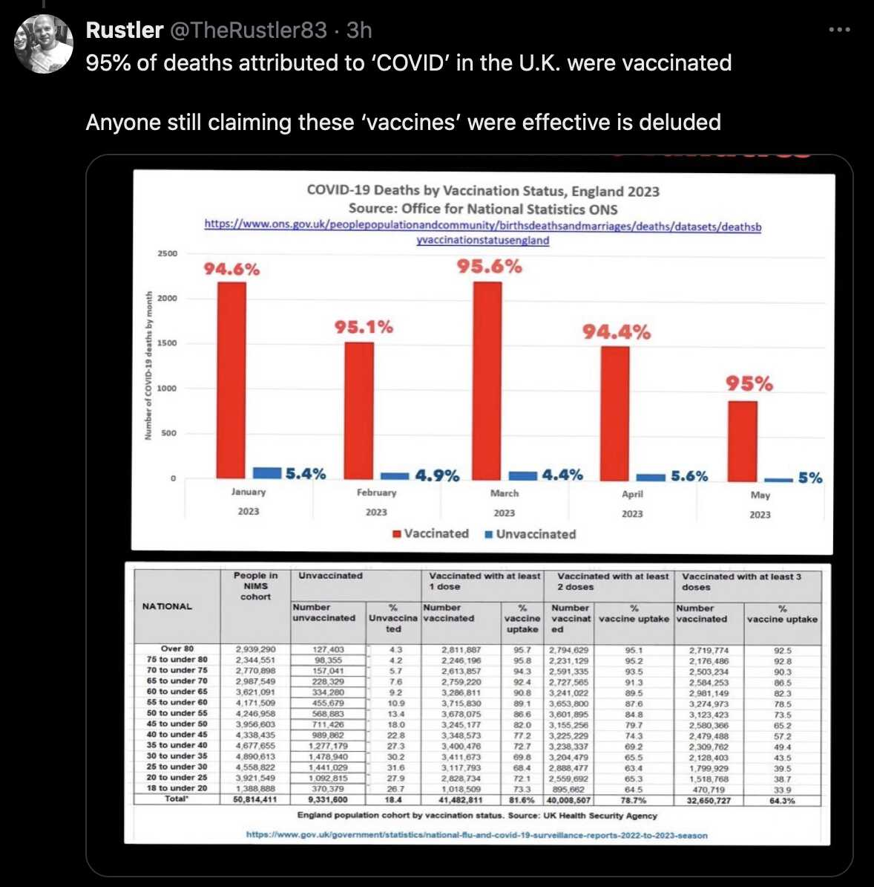
However the table at the bottom didn't show the percentage of vaccinated people in the ONS dataset for mortality by vaccination status, but in the UKHSA flu and COVID-19 surveillance reports. And unvaccinated people are underrepresented in the ONS dataset, because it had only about 2% to 2.5% vaccinated people in elderly age groups in 2023:
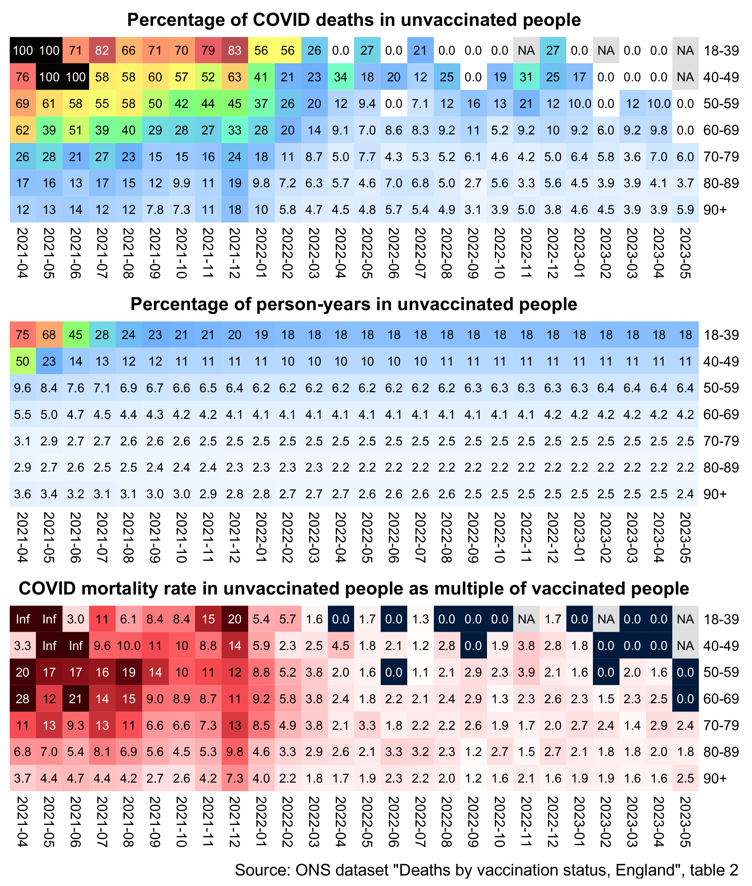
library(colorspace)
t=read.csv("http://sars2.net/f/ons-table-2-2023-august.csv",na.strings=c("x","<3"))
t=t[t$cause=="Deaths involving COVID-19",]
t$date=sprintf("%d-%02d",t$year,match(t$month,month.name))
t$status[t$status!="Unvaccinated"]="Vaccinated"
a=aggregate(t[,c(6:7)],t[,c(1,4,5,12)],sum,na.rm=T)
m1=xtabs(dead~age+date,subset(a,status=="Unvaccinated"))/xtabs(dead~age+date,a)*100
m2=xtabs(pop~age+date,subset(a,status=="Unvaccinated"))/xtabs(pop~age+date,a)*100
pal=hex(HSV(c(210,210,210,160,110,60,30,0,0,0),c(0,.25,rep(.5,8)),c(rep(1,8),.5,0)))
pheatmap::pheatmap(m1,filename="i1.png",display_numbers=ifelse(is.na(m1),"NA",ifelse(m1>10,round(m1),sprintf("%.1f",m1))),
cluster_rows=F,cluster_cols=F,legend=F,cellwidth=17,cellheight=17,fontsize=9,fontsize_number=8,
border_color=NA,na_col="gray90",
number_color=ifelse(!is.na(m1)&m1>80,"white","black"),
breaks=seq(0,100,,256),
main="Percentage of COVID deaths in unvaccinated people",
colorRampPalette(pal)(256))
pheatmap::pheatmap(m2,filename="i2.png",display_numbers=ifelse(is.na(m2),"NA",ifelse(m2>10,round(m2),sprintf("%.1f",m2))),
cluster_rows=F,cluster_cols=F,legend=F,cellwidth=17,cellheight=17,fontsize=9,fontsize_number=8,
border_color=NA,na_col="gray90",
number_color=ifelse(m2>80,"white","black"),
breaks=seq(0,100,,256),
main="Percentage of person-years in unvaccinated people",
colorRampPalette(pal)(256))
m3=(m1/m2)/((100-m1)/(100-m2))
disp3=ifelse(m3<10,sprintf("%.1f",m3),round(m3))
m3=m3-1
max3=20
m3=ifelse(m3<0,1/m3*max3,m3)
pal2=colorRampPalette(hex(HSV(c(210,210,210,210,0,0,0,0,0),c(1,.8,.6,.3,0,.3,.6,.8,1),c(.3,.65,1,1,1,1,1,.65,.3))))(256)
pheatmap::pheatmap(m3,filename="i3.png",display_numbers=disp3,
cluster_rows=F,cluster_cols=F,legend=F,cellwidth=17,cellheight=17,fontsize=9,fontsize_number=8,
border_color=NA,na_col="gray90",
number_color=ifelse(!is.na(m3)&abs(m3)>.6*max3,"white","black"),
breaks=seq(-max3,max3,,256),
main="COVID mortality rate in unvaccinated people as multiple of vaccinated people",
colorRampPalette(pal2)(256))
sub="Source: ONS dataset \"Deaths by vaccination status, England\", table 2"
system("convert i[123].png -append 0.png")
system(paste0("f=0.png;mar=70;w=`identify -format %w $f`;convert \\( $f -gravity northeast -splice x20 \\) \\( -size $[w-mar]x -font Arial -interline-spacing -3 -pointsize 44 caption:'",sub,"' -extent $[w-mar]x -gravity south -splice x20 \\) -append 1.png"))
Jikkyleaks posted this tweet: [https://x.com/Jikkyleaks/status/1806280754600845529]
Please explain to me how people having received the RCT-based approved dose of product (2 doses that had 95% efficacy vs infection) did better than those that didn't, like I took a gene therapy for a donut.

However the mortality rate of people under the second dose shoots up when the healthy vaccinees get the third dose and the unhealthy stragglers remain under the second dose.
For example in the plot below which shows CMR for ages 80-89 from table 2 of the ONS spreadsheet, October 2021 is the first month when a large number of people are included under the third dose, but in October 2021 people with three doses have about -65% excess mortality relative to the general population of England. As the negative excess mortality of people under the third dose gradually gets closer to zero, the positive excess mortality of people with two doses also returns closer to zero:
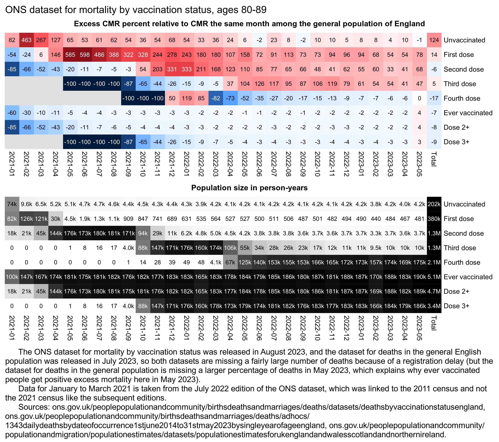
In the plot above if you look at people with two or more doses instead of only two doses, they continue to have lower CMR than the general population of England even after the third dose is rolled out.
Kirsch posted this tweet of cataract diagnoses in England with the ICD code H28: [https://x.com/stkirsch/status/1820543885476827327]
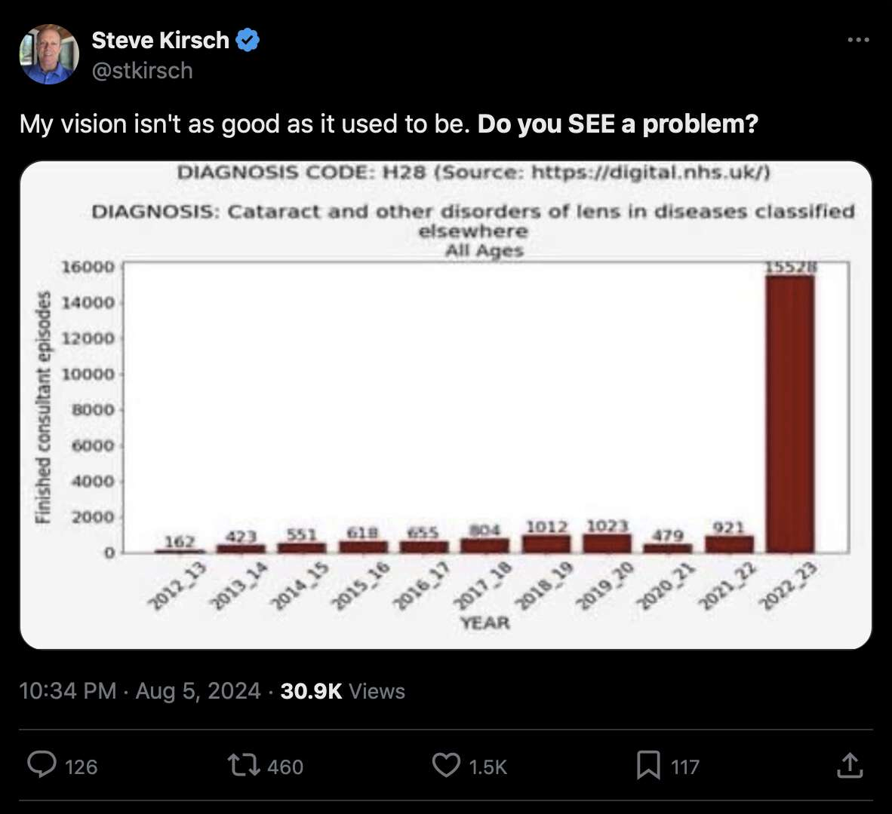
However H28 isn't even a very comon diagnosis. And other more common eye-related diagnoses have remained more stable in England (even though in the financial year 2022-2023 I got about 15% total excess diagnoses under the ICD codes H00-H59, and I got about 44% excess diagnoses for the ICD code for "other cataract" which is much more common than H28): [https://digital.nhs.uk/data-and-information/publications/statistical/hospital-admitted-patient-care-activity]
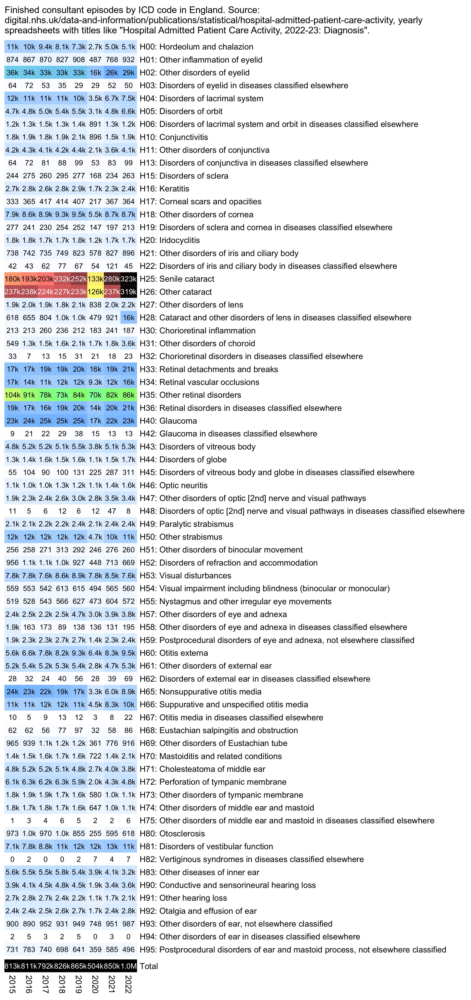
library(data.table)
dlf=\(x,y,...){if(missing(y))y=sub(".*/","",x);for(i in 1:length(x))download.file(x[i],y[i],quiet=T,...)}
dlf("https://files.digital.nhs.uk/7A/DB1B00/hosp-epis-stat-admi-diag-2022-23-tab_V2.xlsx")
dlf("https://files.digital.nhs.uk/0E/E70963/hosp-epis-stat-admi-diag-2021-22-tab.xlsx")
dlf("https://files.digital.nhs.uk/5B/AD892C/hosp-epis-stat-admi-diag-2020-21-tab.xlsx")
dlf("https://files.digital.nhs.uk/37/8D9781/hosp-epis-stat-admi-diag-2019-20-tab%20supp.xlsx")
dlf("https://files.digital.nhs.uk/1C/B2AD9B/hosp-epis-stat-admi-diag-2018-19-tab.xlsx")
dlf("https://files.digital.nhs.uk/B2/5CEC8D/hosp-epis-stat-admi-diag-2017-18-tab.xlsx")
dlf("https://files.digital.nhs.uk/publication/7/d/hosp-epis-stat-admi-diag-2016-17-tab.xlsx")
dlf("https://files.digital.nhs.uk/publicationimport/pub22xxx/pub22378/hosp-epis-stat-admi-diag-2015-16-tab.xlsx")
r=do.call(rbind,lapply(2015:2022,\(i){
t=data.table(readxl::read_excel(Sys.glob(paste0("hosp-epis-stat-admi-diag-",i,"*")),sheet=3))
t[grep("^H[0-9]",t[[1]]),.(cause=paste0(.SD[[1]],": ",.SD[[2]]),count=as.integer(.SD[[8]]),year=i)]}))
r[,cause:=factor(cause)]
r=rbind(r,r[,.(count=sum(count),cause="Total"),year])
r=merge(r,r[year<2020,.(year=2015:2022,base=predict(lm(count~year),.(year=2015:2022))),cause])
r[,year:=paste0(year,"-",substr(year+1,3,4))]
m1=xtabs(count~cause+year,r)
m2=xtabs(pmax(0,base)~cause+year,r)
m=(m1-m2)/ifelse(m1>m2,m2,m1)*100
disp=round((m1/m2-1)*100)
hide=is.infinite(m);m[hide]=disp[hide]=NA;disp[is.nan(disp)]=NA
maxcolor=300;exp=.8
pheatmap::pheatmap(abs(m)^exp*sign(m),filename="i1.png",display_numbers=disp,gaps_row=nrow(m)-1,
cluster_rows=F,cluster_cols=F,legend=F,cellwidth=18,cellheight=14,fontsize=9,fontsize_number=8,
border_color=NA,na_col="gray90",
number_color=ifelse(!is.na(m)&abs(m)^exp>maxcolor^exp*.4,"white","black"),
breaks=seq(-maxcolor^exp,maxcolor^exp,,256),
colorRampPalette(hsv(rep(c(7/12,0),5:4),c(.9,.75,.6,.3,0,.3,.6,.75,.9),c(.4,.65,1,1,1,1,1,.65,.4)))(256))
kimi=\(x){e=floor(log10(ifelse(x==0,1,abs(x))));e2=pmax(e,0)%/%3+1;x[]=ifelse(abs(x)<1e3,round(x),paste0(sprintf(paste0("%.",ifelse(e%%3==0,1,0),"f"),x/1e3^(e2-1)),c("","k","M","B","T")[e2]));x}
m=m1;disp=kimi(m);m=m/max(m[-nrow(m),]);exp=.6
pheatmap::pheatmap(m^exp,filename="i2.png",display_numbers=disp,gaps_row=nrow(m)-1,
cluster_rows=F,cluster_cols=F,legend=F,cellwidth=18,cellheight=14,fontsize=9,fontsize_number=8,
border_color=NA,number_color=ifelse(m^exp>.8,"white","black"),
breaks=seq(0,1,,256),
colorRampPalette(hsv(c(21,21,21,16,11,6,3,0,0,0)/36,c(0,.25,rep(.5,8)),c(rep(1,8),.5,0)))(256))
system("magick \\( i1.png -extent 632x \\) \\( i2.png -chop 18x \\) +append 0.png")
cap="Finished consultant episodes by ICD code in England. The left side shows an excess percentage relative to a 2015-2019 linear trend. Source: digital.nhs.uk/data-and-information/publications/statistical/hospital-admitted-patient-care-activity, yearly spreadsheets with titles like \"Hospital Admitted Patient Care Activity, 2022-23: Diagnosis\"."
system(paste0("w=`identify -format %w 0.png`;pad=20;magick -pointsize 42 -interline-spacing -2 -font Arial \\( -size $[w-pad*2]x caption:'",cap,"' -splice $[pad]x20 \\) 0.png -append 1.png"))
The Twitter user dobssi also posted this screenshot which showed that Sweden didn't have any major increase in H28 diagnoses after vaccination started: [https://x.com/dobssi/status/1820769543129600081, https://sdb.socialstyrelsen.se/if_par/val.aspx]
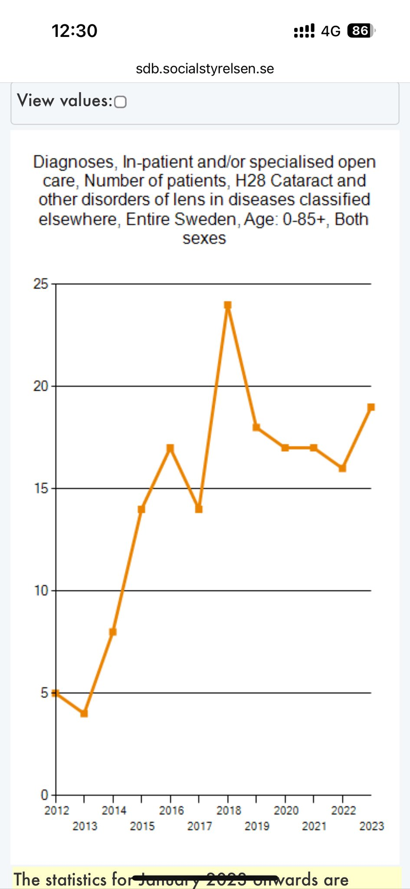
From the sheet for the 4-letter codes in the spreadsheet titled "Hospital Admitted Patient Care Activity, 2022-23: Diagnosis", you can that there are three subcodes under H28. Out of 15,528 finished consultant episodes with the primary diagnosis H28, diabetic cataract (H28.0) accounted for 15,516 episodes, and the other two codes accounted for only 12 episodes combined:
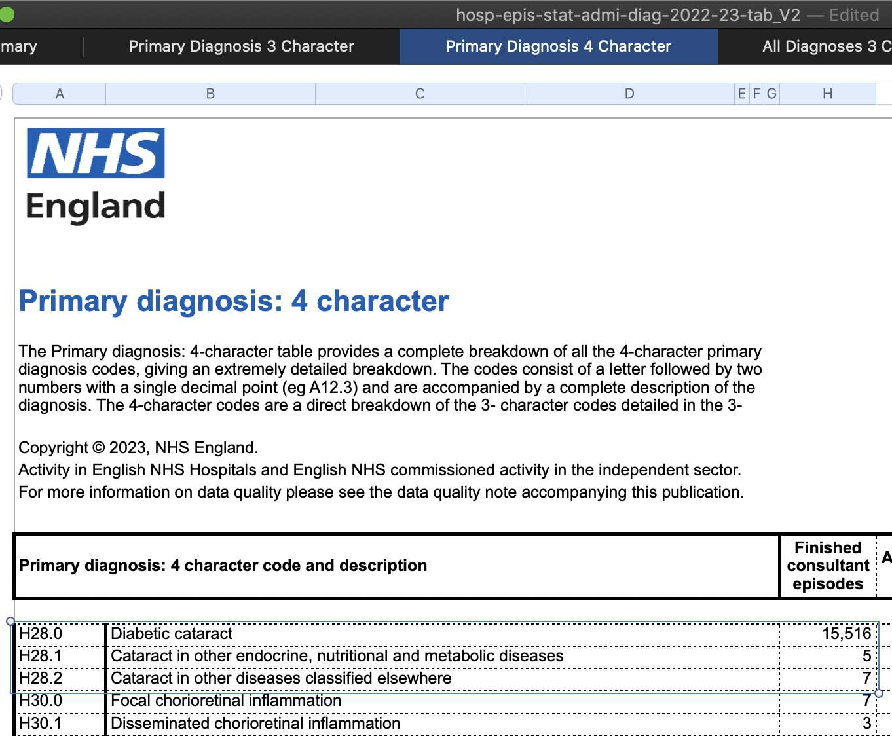
A reason why diagnoses for cataracts have increased might be because more people decided to get diagnosed in order to get a cataract surgery, and not necessarily because the prevalence of cataracts has increased. A Guardian article from 2024 said that there has been a boom in cataract surgeries in the past few years: [https://www.theguardian.com/society/article/2024/jun/16/boom-in-cataract-surgery-in-england-as-private-clinics-eye-huge-profits]
Hundreds of thousands more NHS patients a year are having cataracts removed in England in a boom driven by private clinics - but funded by taxpayers.
Doctors say the trend, which now means nearly 60% of NHS cataract operations are outsourced to private providers - up from 24% five years ago - is piling pressure on already stretched NHS finances and sapping the funds needed for more serious conditions that can lead to blindness.
The surgery, a painless procedure to treat blurry vision by replacing the eye's natural lens with an artificial one, usually takes 10 to 15 minutes and has become increasingly routine.
The Royal College of Ophthalmologists says the number of cataract treatments has jumped by nearly 40% from pre-pandemic levels, meaning an extra 200,000 people a year are having the procedure on the NHS. It claims the jump is down to outsourcing to the private sector.
But Ben Burton, the college's president, says that while the independent sector helped reduce backlogs after the pandemic, it has "continued to expand to a level where there's less and less benefit and more and more cost".
The Royal National Institute of Blind People is also concerned that the use of private providers is having a "destabilising effect on NHS eye care services". It said: "It is also important to take into consideration the unequitable nature of the expansion of the independent sector, which has shown significant regional variation and favoured affluent areas."
NHS spending on cataracts has doubled in five years and there has been a jump in outsourcing, according to research published in March by the Centre for Health and the Public Interest (CHPI) thinktank.
Its analysis of data from 37 of 42 integrated care boards in England found that the NHS paid private clinics about £700m for cataracts from 2018-19 to 2022-23, which doubled its overall annual spending on cataract procedures in NHS hospitals and private clinics from £218m to £437m.
Over the five-year period, this helped push the share of the NHS eye care budget that is spent on cataracts up from 27% to 36%.
"Free NHS cataract surgery in four weeks." This tempting offer appears on Google when you search for SpaMedica, the biggest private provider of cataract surgery to the health service. It advises patients to ask their optician or GP to refer them for treatment at a hospital of their choice and says they should hear back within two to three weeks.
The top five companies providing cataract surgery to the NHS have opened 101 new eye clinics between them over the past five years, taking the total to 126 in England. In 2022, they collectively made pretax profits of more than £100m, according to figures filed at Companies House, with SpaMedica earning £72m.
The reason why diagnoses for diabetic cataracts (H28.0) suddenly skyrocketed in the financial year 2022-2023 might be if NHS provided a higher payment for diabetic cataract surgeries than other cataract surgeries. The Guardian article said that the NHS coding system allowed private providers of cataract surgeries to claim a higher payment in cases where the patient had comorbidities, and that NHS had to change the payment scheme in 2024 due to widespread abuse:
NHS England has recently taken private contractors to task over a marked increase in "complex" cataract procedures, for which the charges were as much as £400 higher. Complex cases have risen 144% in five years and the CHPI estimates this has cost the NHS £29m extra over the last two years alone.
An NHS England consultation raised concerns about the rise in December 2022, saying it could not be explained by changes in patient complexity. In an official response to the consultation the following month, the royal college suggested the increase could be down to a practice known as "upcoding".
All treatments have payment codes and upcoding means providers charge for a more expensive one than they performed.
The opportunity to do this is there, according to Simon Peck, who worked for the insurer Axa for nearly 25 years as head of audit and investigations, because the NHS coding system allows providers to claim additional payment where a case is more complicated or the patient is older or has comorbidities. "This choice is offered for good reasons; however, it also opens the door to potential abuse, particularly if there are not sufficient controls and procedures in place."
Hare of the IHPN said: "Robust checks, including external audits, are in place and local NHS integrated care systems, who commission healthcare activity, work closely with providers to ensure that coding is accurate."
NHS England changed the tariffs in April this year so there is only a £30 difference between routine and complex cataract treatments - £868 for a routine operation and £898 for a complex cataract.
I found a UK document titled "Understanding Coding in Ophthalmology": https://uk-oa.co.uk/wp-content/uploads/2018/08/UKOA_Publications_Coding_Background_to_Coding_for_Ophthalmologists_Aug_2018.pdf. On pages 11-12, the document gave an example of two ways to code for the same case. In one example the primary diagnosis was listed as H26.9 (cataract, unspecified) but in the other example the primary diagnosis was listed as H28.0 (diabetic cataract). And next a note said: "By simply recording that this is a diabetic cataract, rather than just a cataract, and by recording the two systemic conditions (vascular dementia and congestive cardiac failure) the hospital is paid more."
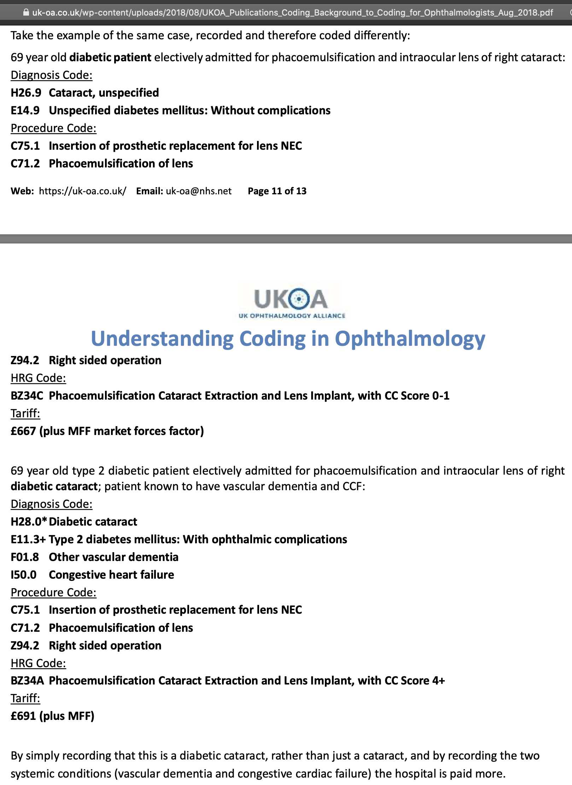
Relative to the average of the business years starting in 2015 to 2019, the average number of diagnoses in the business years starting in 2021 and 2022 was also about 300% higher for the diagnosis H26.8 (other specified cataract) and about 400% higher for H25.2 (senile cataract, morgagnian type):
r=do.call(rbind,lapply(2015:2022,\(i){
t=readxl::read_excel(Sys.glob(paste0("hosp-epis-stat-admi-diag-",i,"*")),sheet=4)
t=t[grep("^H2[568]",t[[1]]),]
data.table(code=t[[1]],name=t[[2]],year=i,count=as.numeric(t[[8]]))}))
base=r[year<2020,.(base=mean(count)),.(code,name)]
me=merge(base,r[year>2020,.(postvax=mean(count)),.(code,name)])
me=me[,.(excesspct=(postvax/base-1)*100,postvax,base),.(name,code)][order(excesspct)]
print(mutate_if(me,is.double,round),r=F)
name code excesspct postvax base
Senile cataract, unspecified H25.9 -42 12538 21590
Infantile, juvenile and presenile cataract H26.0 -28 82 114
Drug-induced cataract H26.3 -22 68 87
Cataract, unspecified H26.9 -15 166821 196133
Complicated cataract H26.2 -2 228 232
Traumatic cataract H26.1 6 474 446
Cataract in other diseases classified elsewhere H28.2 12 6 6
Senile nuclear cataract H25.1 18 160459 136152
Senile incipient cataract H25.0 33 24143 18128
Cataract in other endocrine, nutritional and metabolic diseases H28.1 43 5 4
After-cataract H26.4 118 37522 17202
Other senile cataract H25.8 187 103294 36012
Other specified cataract H26.8 315 72776 17546
Senile cataract, morgagnian type H25.2 388 964 198
Diabetic cataract H28.0 924 8216 802
Here's also a plot of the 4-letter codes:
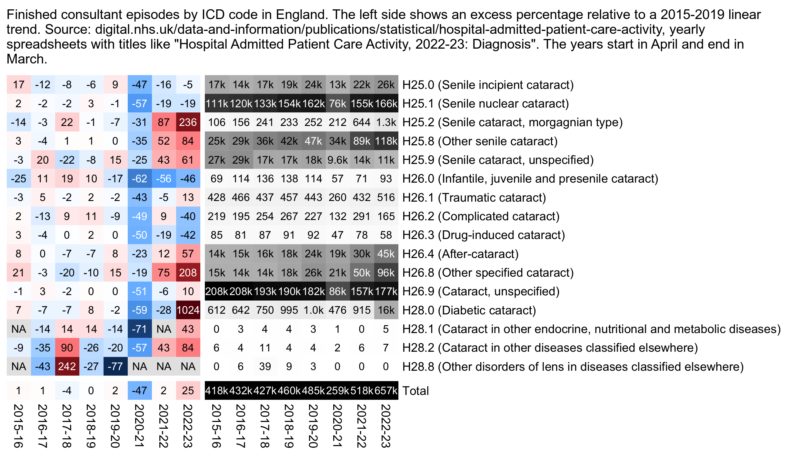
Kirsch didn't cite a source for his plot of H28 diagnoses but he just wrote that "I screen grabbed this image during a recent conference call." [https://kirschsubstack.com/p/eye-issues-skyrocket-after-the-covid] The plot looks like it was made by the same author who made the plot below that showed diagnoses for a family history of breast cancer. The plot was featured prominently in a letter that Andrew Bridgen sent to members of the UK parliament in 2024: [https://ethicalapproach.co.uk/healthdataletter.pdf]
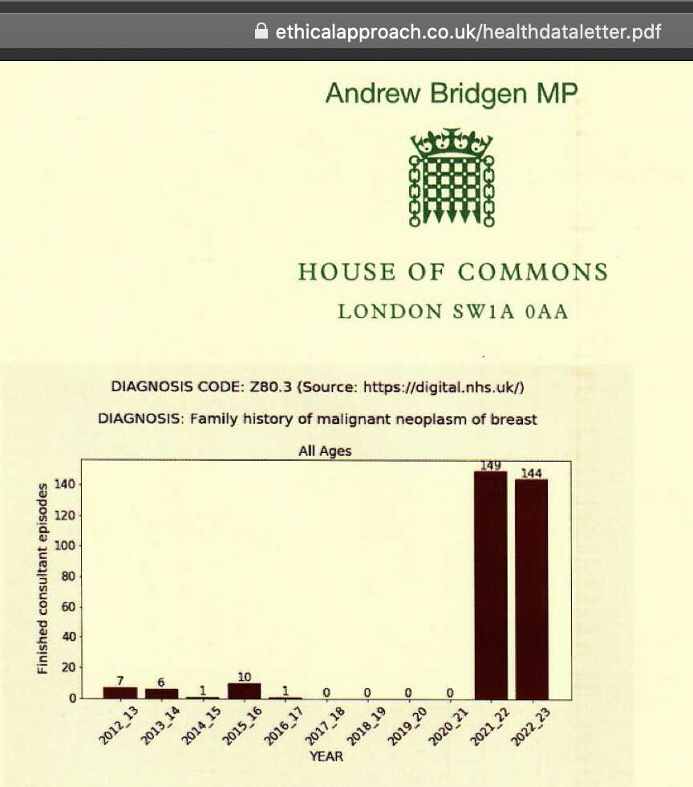
Bridgen's plot might seem scary at first if you don't pay attention to how it shows diagnoses for family history of breast cancer, which presumably wouldn't have been impacted as much by vaccination as the actual incidence of breast cancer (because the family history of cancer is based on the incidence over several decades so it doesn't change as fast as the actual incidence of breast cancer). Bridgen also didn't mention that his plot showed only primary diagnoses, but the family history diagnosis is not even meant to be used as a primary diagnosis according to NHS guidelines. And his plot only started in the business year 2012-2013, so it didn't show that there was a fairly high number of primary diagnoses for family history of breast cancer in the business year 2009-2010 and earlier: [https://x.com/UncleJo46902375/status/1804448406535868862]
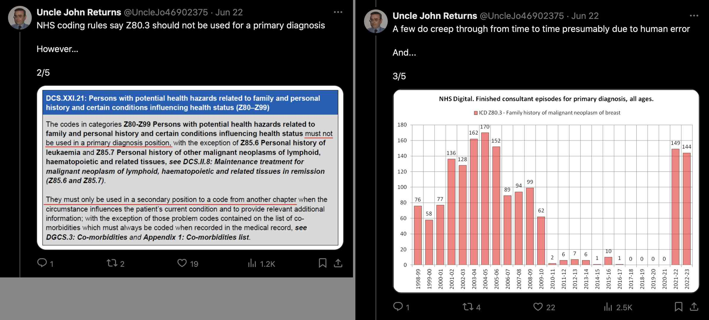
Clare Craig posted this Twitter thread in May 2024: [https://x.com/ClareCraigPath/status/1793622868565299341]
The first England vaccine database was made public in April 2021.
Prior to that it was too chaotic to publish.
The key problem is that people who died after vaccinatoin before April 2021 did not necessarily have their deaths recorded as vaccinated deaths.
Email from ONS: 🧵
For years now @profnfenton @MartinNeil9 @LawHealthTech @RealJoelSmalley @jengleruk and others have been calling out this problem of misclassification.
ONS claimed it was all due to a "healthy vaccinee effect" whereby those on deaths door were not vaccinated, and then died making for a high mortality rate in the small remaining unvaccinated group.
However, they have also claimed an "unhealthy vaccinee effect."
In reality, the proportion of unvaccinated with high numbers of comorbidities remained constant throughout the vaccine rollout.
It is possible to make the healthy vaccinee effect work to predict deaths but the assumptions that have to be made to do this are not credible.
There are clear points where the data was unreliable that we also pointed out. https://researchgate.net/publication/358979921_Official_mortality_data_for_England_reveal_systematic_undercounting_of_deaths_occurring_within_first_two_weeks_of_Covid-19_vaccination
HART also published a Substack post which included a screenshot of another email where ONS said that the number of people who had been excluded because of the error was only 2,044: [https://hartuk.substack.com/p/have-ons-admitted-to-problems-with]
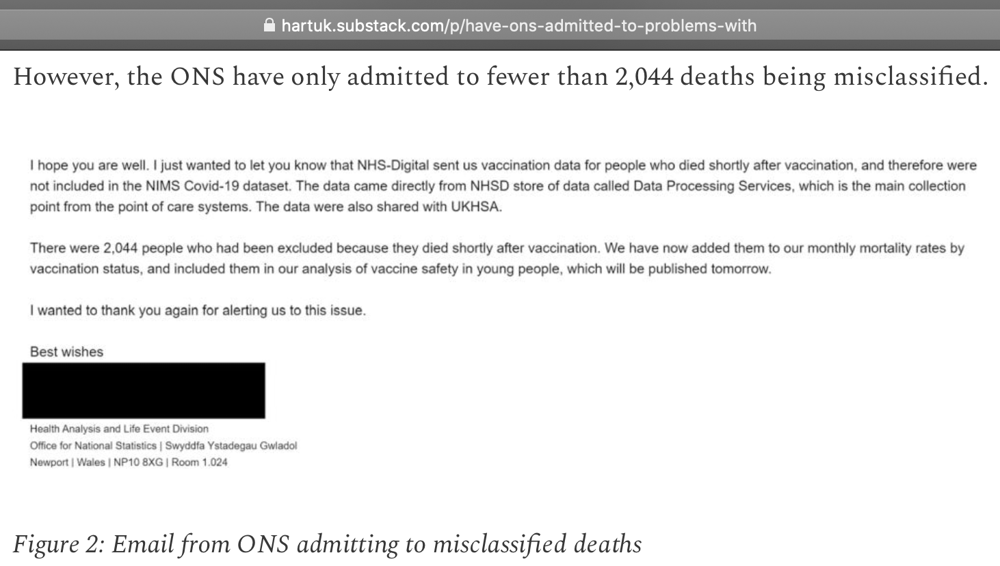
At first I was confused why HART's Substack post said that "the ONS have only admitted to fewer than 2,044 deaths being misclassified", even though the email said that 2,044 people were excluded because they died soon after vaccination (and not fewer than 2,044 people). But Clare Craig replied to me that the reason why she said it was fewer than 2,044 people was because all 2,044 people were not linked to the dataset for mortality by vaccination status, as was explained in the ONS bulletins.
HART's Substack post didn't include the date of the email, even though I think the email was from 2022. People on social media were making it seem like it was some kind of breaking news that the ONS had only now admitted the error, even though ONS had already mentioned the error in the bulletin for the 6th edition of their dataset which was published in May 2022, and they mentioned the error in the bulletin for each subsequent edition until the final 9th edition:
But in any case, the ONS has already corrected the error and added in the missing vaccination entries, but it didn't make much difference to the overall mortality rate of vaccinated and unvaccinated people. The latest 9th edition of the ONS dataset includes a total of 986,395 deaths in vaccinated people, so even 2,000 extra deaths wouldn't make much difference. And it could be that some of the missing vaccination entries were for second or further doses, so some of the added vaccination entries didn't necessarily turn unvaccinated deaths into vaccinated deaths but they could've turned deaths in people with one dose into deaths in people with 2 doses, or deaths in people with 3 doses into deaths in people with 4 doses.
In 2021 and 2022, Norman Fenton, Martin Neil, Clare Craig, et al. published a series of preprints where they presented various alternative hypotheses to explain phenomena in the ONS dataset which they claimed were anomalies but which the ONS said were due to the healthy vaccinee effect. The phenomena included a low number of deaths in the first two weeks after vaccination, a high number of non-COVID deaths in unvaccinated people that coincided with the rollout of the first dose, and an increase in ASMR of people with n-1 doses when the nth dose was rolled out. Even though a lot of evidence had been presented since then that the phenomena can in fact be explained by the healthy vaccinee effect, in March 2024 Martin Neil still tweeted: "There is no evidence of a healthy vaccinee effect. You are signing up to an assumption usually exploited to pretend vaccines are effective. We demonstrated this using the ONS's own data." [https://x.com/MartinNeil9/status/1767991047940907318]
After the email by the ONS was released, Norman Fenton and Martin Neil misrepresented the email as somehow indicating that their preprints about the ONS data were correct, and that the healthy vaccinee effect didn't explain the various anomalies in the ONS data that Fenton and Neil claim to have identified: [http://web.archive.org/web/20240524104551/https://wherearethenumbers.substack.com/p/we-were-right-the-uk-ons-now-admit]
In 2021 when the UK ONS (Office for National statistics) started releasing its vaccine by mortality status reports we exposed that there were large spikes in the non-coviddeath rates in the 'unvaccinated'. These spikes in mortality coincided with the first main vaccine rollout and did so for each age group (see this report, for example).
Here is the chart for non-covid mortality rates in weeks 1-38 of 2021 for the 60-69 age groups:
The charts for the other age groups looked much the same.
We asserted that these obvious anomalies were a result of the standard ONS procedure of categorising anyone within 20 days of their first dose as 'unvaccinated'. However, in our own discussions with the ONS they maintained that, although that method was used for their efficacy calculations, it was not used when it came to mortality. They clearly said that a person dying any time after vaccination was correctly categorised, as a vaccinated death, in the mortality data they regularly released to the public and which formed the basis of a massive public communication campaign encouraging vaccination.
To 'explain' the spikes the ONS pushed the implicit assumption that there was a phenomenon called the 'healthy vaccinee' effect, whereby they claimed that people 'close to death' were not vaccinated. And they made this bold claim without any data to support it whatsoever.
Apart from the fact that this would have contradicted the NHS policy at the time we showed that, while a healthy vaccinee effect might have partly explained the longer term lower non-covid mortality rates in the vaccinated, it could not possibly have explained those spikes in mortality rates.
They could only be explained by categorising deaths shortly after vaccination as unvaccinated. Yet the ONS, along with many of the staunchest covid vaccine disciples, doubled down on their insistence that such miscategorisation did not occur. To them all the anomalies in the ONS data could only be explained by the hallowed 'healthy vaccinee effect'.
Later, the ONS did actually claim that there was indeed an 'unhealthy vaccinee effect' but did so to explain other anomalies in the data. Clearly the ONS was so self-serving they did not see the contradictions between these claims and simply wanted to have their cake and eat it.
As a result of a subject access request that Clare Craig submitted to the ONS we have now found out that we were correct after all!
Clare has posted on this twitter/X thread, an internal ONS email confirming that the NIMS database of vaccinated people, that the ONS relied upon, had excluded those people who had died before vaccine records had been sent back to the central system:
When we pointed out to the ONS exactly this possibility for miscategorisation in 2021 they continued to deny that it had happened (see Table 8 of our report here).
Why is this so important? Because the ONS data - possibly more so than any other source of data in the world - was used to bolster the claim that the vaccines were highly effective and safe.
And, as we have always argued, and which is now certain, any claims of efficacy and safety based on their data were completely illusionary and subject to the cheap trick of miscategorisation whereby even a placebo - or something even worse - could be 'shown' to be safe and effective.
They therefore lied and intentionally created and spread misinformation. We were accused of conspiracy thinking and our reputations were tarnished as a result.
But we were right!
However the ONS had already fixed the issue of the missing vaccination entries in 2022, but it didn't have much effect on the overall mortality rates of vaccinated and unvaccinated people. Unvaccinated people still have a big spike in non-COVID deaths in early 2021, there's still low mortality in the first 3 weeks after vaccination, and the ASMR of people with n-1 doses still shoots up when the nth dose is rolled out. So the various phenomena which Fenton and Neil attempted to explain in their preprints are still present in the ONS dataset even though the error of the missing vaccination records was already fixed. So the error was not sufficient to explain the phenomena, so Fenton and Neil still need to come up with some other way to explain them.
Steve Kirsch posted this Substack post about a short comment-type paper that was published in The Lancet: [https://kirschsubstack.com/p/uk-ons-excess-deaths-in-the-uk-cannot]
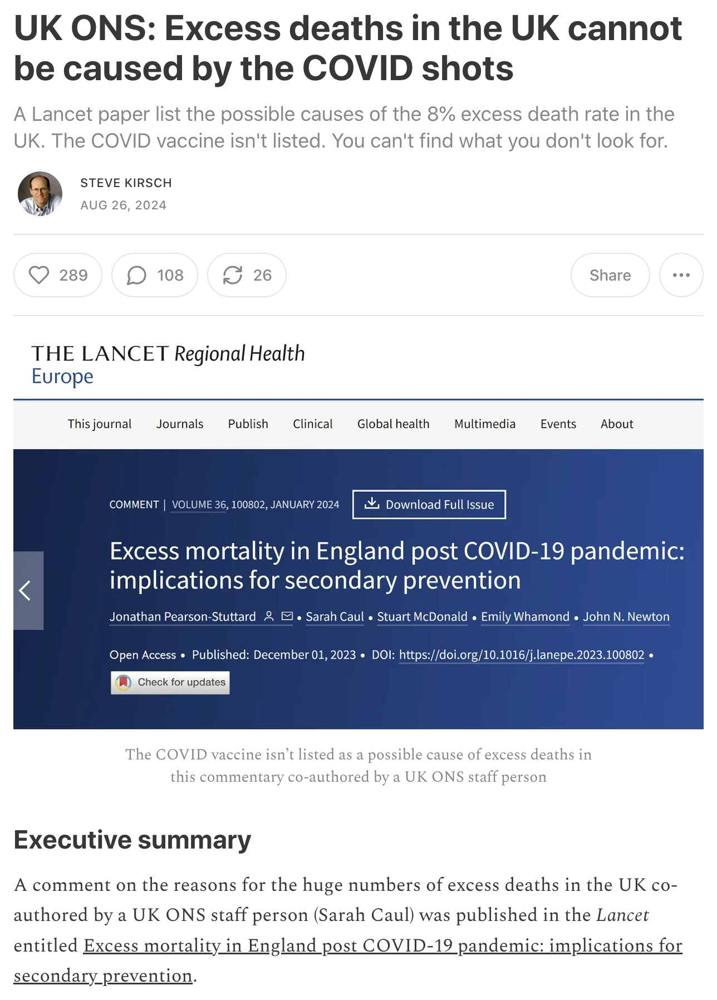
The paper said: "The UK Office for National Statistics (ONS) has calculated that there were 7.2% or 44,255 more deaths registered in the UK in 2022 based on comparison with the five-year average (excluding 2020). This persisted into 2023 with 8.6% or 28,024 more deaths registered in the first six months of the year than expected." [https://www.thelancet.com/journals/lanepe/article/PIIS2666-7762%2823%2900221-1/fulltext]
The paper was published in December 2023 before the ONS had published their new methodology for calculating excess deaths, so the paper still used the old 5-year average method to calculate the baseline number of deaths. However the 5-year average baseline overestimates excess deaths because there is an increasing trend in the yearly number of deaths but the 5-year average baseline is lagging 3 years behind the trend (or 4 years behind the trend from 2021 onwards since the year 2020 is excluded).
In the plot below I used a more accurate method to calculate the baseline for excess deaths for the green line. I first calculated a linear trend in CMR by 5-year age groups in 2010-2019, then I projected the trend for each age group to 2020-2023, and I multiplied the population size of each age group with the projected trend to get the expected deaths, and I added together the expected deaths for all age groups to get the total expected deaths for each year. It gave me only about 3.9% excess deaths in England and Wales in 2022 and about 3.3% excess deaths in 2023:
In the plot above I looked at deaths by registration date like the paper in Lancet, but I only included England and Wales instead of the whole UK, and I looked at deaths in the whole of 2023 instead of only the first 6 months of 2023.
In the plot above I used data from the spreadsheet which accompanied the article by the ONS about the new baseline methodology, which has data for monthly deaths by registration date and monthly population estimates that is grouped by 5-year age groups and region of UK: https://www.ons.gov.uk/peoplepopulationandcommunity/healthandsocialcare/causesofdeath/articles/estimatingexcessdeathsintheukmethodologychanges/february2024. I posted R code for making the plot here: #Clare_Craig_New_baseline_used_by_ONS_to_calculate_excess_deaths. Here's a simplified version of the code which only calculates the yearly percentage of excess deaths:
download.file("https://www.ons.gov.uk/file?uri=/peoplepopulationandcommunity/healthandsocialcare/causesofdeath/datasets/estimatingexcessdeathsintheukmethodologychanges/current/dataset20240220.xlsx","dataset20240220.xlsx")
library(data.table)
t=data.table(readxl::read_excel("dataset20240220.xlsx",skip=4,sheet=6))
t=t[Geography=="England and Wales, including non-residents"]
t[,pop:=`Population estimate`*lubridate::days_in_month(paste0(Year,"-",match(Month,month.name),"-1"))]
a=t[,.(dead=sum(`Death registrations`),pop=sum(pop)),.(age=`Age group`,year=Year)]
years=unique(a$year)
a=merge(a,a[year%in%2010:2019,.(year=years,base=predict(lm(dead/pop~year),.(year=years))),age])[,base:=base*pop]
a[year>=2015,.(excesspct=round((sum(dead)/sum(base)-1)*100,1)),year]|>print(r=F)
year excesspct 2015 2.2 2016 0.0 2017 0.8 2018 1.4 2019 -1.8 2020 11.6 2021 7.0 2022 3.9 2023 3.3
The Twitter user Camus posted this tweet: [https://x.com/newstart_2024/status/1834270020270260262]
Children who received Covid mRNA shots are 45 times more likely to die from any cause than unvaccinated kids, alarming official government statistics have revealed.
The bombshell data shows that children who received Covid mRNA shots are at a massively elevated risk of dying.
The shocking figures were revealed in a UK government report.
Buried in the report is the disturbing confirmation that the Covid injections have been killing children at an unprecedented rate.
The admission was quietly revealed in a section of the report compiled using data from the UK government's Office for National Statistics (ONS).
The data shows that children who received the shots are 4423%/45x more likely to die of any cause than unvaccinated children.
Additionally, vaxxed children are 13,633%/137x more likely to die of COVID-19 than those who didn't receive an mRNA injection.
The stunning figures were revealed in recently published ONS data regarding deaths by vaccination status in England.
The latest dataset from the ONS is titled "Deaths by Vaccination Status, England, 1 January 2021 to 31 May 2022."
The disturbing data reveals that triple-vaccinated teenagers are 136% / 2.35x more likely to die of Covid-19 than unvaccinated teenagers.
they are also 38% more likely to die of any cause than unvaccinated teenagers.
The worst figures in terms of all-cause deaths are however among double-vaccinated teenagers.
Official UK government data reveals that double-vaccinated teenagers, with a mortality rate of 36.17 per 100,000 person-years, are 149.3% / 2.5 times more likely to die of any cause than unvaccinated teenagers with a mortality rate of 14.51 per 100,000 person-years.
To summarise, the official UK government figures published by the UK's Office for National Statistics, prove that Covid mRNA-vaccinated children and teenagers are far more likely to die of both COVID-19 and any other cause than children and teenagers who have never received a shot.
The data proves that "vaccination" is actually worsening the immune response to the alleged virus and increasing the risk of both hospitalization and death.
However, regarding all-cause deaths, Covid mRNA injections are directly killing children.
The tweet was based on this article: https://slaynews.com/news/covid-vaxxed-kids-45-times-more-likely-die-unvaccinated/. The article used data from the 7th version of the ONS dataset for deaths by vaccination status, which included a table that was removed in the 8th version that showed the total number of deaths and person-years by 5-year age groups during the whole study period. [https://www.ons.gov.uk/file?uri=/peoplepopulationandcommunity/birthsdeathsandmarriages/deaths/datasets/deathsbyvaccinationstatusengland/deathsoccurringbetween1january2021and31may2022/referencetable06072022accessible.xlsx]
However the tweet by Camus was misleading because it said that "children who received Covid mRNA shots are 45 times more likely to die from any cause than unvaccinated kids". But actually it was only people in the group "Third dose or booster, at least 21 days ago" who had about 45 times higher CMR than unvaccinated people, and the group made up only about 0.5% of all vaccinated person-years. But vaccinated people as a whole had only about 1.2 times higher CMR than unvaccinated people. The table below shows data for all-cause deaths in ages 10 to 14 from Table 6 of the 7th edition of the ONS dataset, which included data from January 2021 up to May 2022:
| Status | Person-years | Deaths | CMR |
|---|---|---|---|
| First dose, less than 21 days ago | 61754 | 4 | 6.5 |
| First dose, at least 21 days ago | 280645 | 14 | 5.0 |
| Second dose, less than 21 days ago | 36646 | 0 | 0.0 |
| Second dose, between 21 days and 6 months ago | 135989 | 13 | 9.6 |
| Second dose, at least 6 months ago | 1028 | 1 | 97.3 |
| Third dose or booster, less than 21 days ago | 723 | 1 | 138.3 |
| Third dose or booster, at least 21 days ago | 2422 | 7 | 289.0 |
| Unvaccinated | 2881265 | 184 | 6.4 |
| Vaccinated total | 519207 | 40 | 7.7 |
If the table which showed total mortality rate over the entire study period would've also been included in the two newest editions of the ONS dataset, the total CMR of unvaccinated people in ages 10-14 might have eventually crossed above vaccinated people. In the two newest editions the youngest age group was 18-39. The output below shows cumulative deaths per 100k person-years in ages 18-39 up to the month shown in the first column. Vaccinated CMR was initially higher which might have been because vaccinated people were older than unvaccinated people, or because vulnerable groups of people had been priorized for vaccination, but unvaccinated CMR eventually crossed above vaccinated CMR in December 2021 (but in ages 10-14 it probably took longer for unvaccinated CMR to cross above vaccinated CMR because ages 10-14 got vaccinated later than ages 18-39):
t=fread("http://sars2.net/f/ons.csv")
t=t[ed==9|(ed==7&month<="2021-03")]
a=t[age=="18-39"&cause=="All causes"]
a=a[,.(dead=sum(dead),pop=sum(pop)),.(month,vaxxed=status!="Unvaccinated")]
o=a[vaxxed==T,.(month,vaxcmr=cumsum(dead)/cumsum(pop)*1e5)]
o$unvaxcmr=a[vaxxed==F,cumsum(dead)/cumsum(pop)*1e5]
o[,ratio:=vaxcmr/unvaxcmr]
mutate_if(o,is.double,round,2)|>print(r=F)
month vaxcmr unvaxcmr ratio 2021-01 51.94 68.28 0.76 # cumulative CMR 2021-02 80.93 60.30 1.34 2021-03 77.39 54.78 1.41 2021-04 83.64 49.71 1.68 2021-05 75.64 46.00 1.64 2021-06 64.87 45.76 1.42 2021-07 59.44 47.38 1.25 2021-08 55.43 48.22 1.15 2021-09 53.79 49.41 1.09 2021-10 52.20 50.10 1.04 2021-11 50.86 50.87 1.00 2021-12 49.43 52.41 0.94 2022-01 48.84 52.97 0.92 2022-02 48.36 53.14 0.91 2022-03 48.03 53.08 0.90 2022-04 47.76 52.98 0.90 2022-05 47.25 52.96 0.89 2022-06 46.52 53.17 0.87 2022-07 46.13 53.18 0.87 2022-08 45.48 53.14 0.86 2022-09 44.98 52.64 0.85 2022-10 44.52 52.53 0.85 2022-11 44.08 52.25 0.84 2022-12 44.02 51.92 0.85 2023-01 43.51 51.39 0.85 2023-02 42.85 50.83 0.84 2023-03 42.16 50.32 0.84 2023-04 41.35 49.73 0.83 2023-05 40.58 49.12 0.83 month vaxcmr unvaxcmr ratio